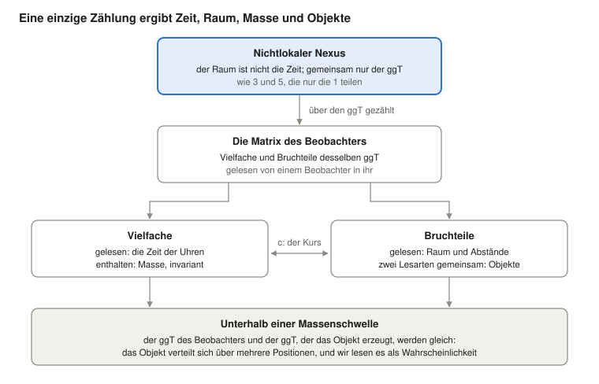

Wer setzt die Gesetze der Physik durch? Niemand, wenn die Materie die Relation selbst ist
Ugo Lanciano · Unabhängiger Forscher, Locri (Italien) · ORCID 0009-0008-7618-9635
Version 2.68.1, 2026-10-26 · Archiviert auf Zenodo: 10.5281/zenodo.23672394 · Lizenz CC BY 4.0 · Mit Hilfe von KI-Assistenten entwickelt, wie im Eintrag angegeben.
Das PDF der Studierendenfassung ist auf Englisch: PDF, Studierendenfassung.
Lesepfad: Grundlagen: warum die Gesetze gelten · danach: MM 2.40.2
Studierendenfassung des MM-Eintrags 2.68.1 (DOI 10.5281/zenodo.23672394), mit einem KI-Assistenten auf Grundlage des archivierten Textes verfasst; der archivierte Text bleibt auf Zenodo.
Ugo Lanciano · ORCID 0009-0008-7618-9635 · Mathematische Materialität (MM) 2.68.1 · archivierter Text vom 26. Oktober 2026
Worum es geht. Dieser Text stellt die Mathematische Materialität (MM) vor, einen Rahmen, der die Physik von den Relationen her liest. Er zeigt die Grundidee, stellt sie an einer Uhr auf die Probe und sagt, wie der Rahmen Raum, Objekte, Masse, Quantenmechanik und Zeit liest. Am Ende berichtet er über vier Einwände von Philosophen und die Antworten des Autors.
Wie man ihn liest. Der Text richtet sich an Studierende der Physik oder der Philosophie. Jedes Fachwort wird beim ersten Auftreten erklärt. Die Wörter, die MM eigen sind, stehen außerdem im Glossar am Ende. Wie die Arbeit durchgeführt wurde (Registrierungen, Prüfungen, Dateien), wird im letzten Abschnitt erzählt.
Die Frage: Wer garantiert die Gesetze der Physik?
Die Gesetze der Physik gelten überall und immer. Ein Elektron hier und ein Elektron in einer fernen Galaxie folgen denselben Regeln. Doch niemand setzt sie durch: Es gibt keinen Polizisten der Natur. Was also garantiert sie?
Die Mathematische Materialität (MM) antwortet so: Die Materie gehorcht keiner Relation, die Materie ist die Relation. Dieser Text legt die These dar. Dann führt er sie am Beispiel einer Uhr durch, mit zwei erklärten Prämissen. Schließlich zeigt er, wie der Rahmen Raum, Objekte, Masse, Quanten und Zeit liest.
Die Idee in drei Punkten.
- Die Gesetze haben keinen Wächter. Ein Ding, das sie bräche, wäre nicht ungehorsam: Es wäre ein anderes Ding.
- Es gibt keine Welt hinter den Relationen. Die Welt, die wir sehen, ist das Geflecht der Relationen, von innen gelesen.
- Die Mathematik greift an der Welt, weil sie die im Geist freigelegte Form einer Relation der Welt ist.
Die beiden klassischen Antworten. Die Frage hat zwei traditionelle Antworten. Beide lassen eine Kluft zwischen der Regel und der Materie.
- Die erste verlegt das Gesetz in einen „Himmel der Formen“, eine von den Dingen getrennte Welt der Ideen, wie bei Platon. Dann bleibt unklar, wie das Gesetz die Materie berührt.
- Die zweite verlegt das Gesetz in unsere Sprache: Gesetze wären von uns gemachte Beschreibungen. Dann bleibt unklar, wie die Sprache die Welt errät.
Es gibt auch eine neuere Idee: Das Universum sei eine Computersimulation. Diese Hypothese setzt einen Programmierer an die Stelle des Himmels der Formen. Vazza (2025) schätzte ab, dass niemand die Energie bezahlen könnte, die eine Maschine bräuchte, um das Universum zu simulieren.
Die Große Umkehrung. MM baut keine Brücke über die Kluft: Sie sagt, dass es keine Kluft gibt. Im Rahmen heißt dieser Schritt die Große Umkehrung. Die Wissenschaft hat ihn schon fünfmal vollzogen. Fünf Dinge sahen wie Substanzen aus und erwiesen sich als Relationen:
- der Wärmestoff, die Flüssigkeit, von der man glaubte, sie trage die Wärme von einem Körper zum anderen;
- das Phlogiston, die Substanz, von der man glaubte, sie entweiche aus den Körpern, wenn sie brennen;
- die Lebenskraft, von der man glaubte, sie unterscheide lebende von nicht lebender Materie;
- der Äther, das Medium, in dem sich das Licht, wie man glaubte, ausbreitete;
- das Urkilogramm in Paris, der Metallzylinder, der lange Zeit das Kilogramm selbst war; heute wird das Kilogramm durch ein an die Planck-Konstante gebundenes Verhältnis definiert.
Jedes Mal blieb die Welt dieselbe. MM wendet denselben Schritt auf die letzten beiden Posten an: Materie und Gesetz.
Die Wörter des Rahmens. Acht Wörter kehren im ganzen Text wieder. Hier genügt ihr Sinn; jedes wird dort wieder aufgenommen, wo es gebraucht wird, und im Glossar am Ende.
- Nexus: die Ausgangsverbindung zwischen zwei verschiedenen Termen. Das Referenzbeispiel ist die Verbindung zwischen den Zahlen 3 und 5.
- Nichtlokal: nicht in Raum und Zeit verortet. Das ist ein „prägeometrischer“ Sinn, das heißt einer, der vor der Geometrie kommt. Es bedeutet nicht Fernwirkung (§1).
- ggT: der größte gemeinsame Teiler, das heißt der einzige Teil, den die beiden Terme gemeinsam haben. Für 3 und 5 ist er 1.
- Kopien: die Wiederholungen der gemeinsamen Einheit, wenn der Nexus gezählt wird. Die 3 enthält drei Kopien der 1, die 5 enthält fünf.
- Matrix: die Menge der Vielfachen und Bruchteile des ggT, gelesen von dem, der sich in ihr befindet. „Matrix“ bedeutet hier nicht eine Zahlentabelle aus der linearen Algebra. Die Vielfachen erscheinen als Zeit, die Bruchteile als Raum.
- Beugung (Diffraktion): die Art, wie sich die Matrix des Beobachters in Bruchteile teilt, um ein Objekt zu ergeben.
- Aufzeichnung: das, was ein Beobachter gesammelt hat. In den Rechnungen ist sie die von der KI gewählte Übersetzung der Matrix des Beobachters.
- Die Übersetzung der KI: die Art, wie ein Satz des Autors zu einer berechenbaren Größe wird. Sie ist eine Wahl, und der Text kennzeichnet sie. Ein Ausgang, der von einer Übersetzung abhängt, betrifft diese Übersetzung, nicht die Prämisse.
Die erläuternden Prämissen (KI). Der Text enthält auch einige „erläuternde Prämissen (KI)“. Das sind von der künstlichen Intelligenz vorgeschlagene Brücken zwischen einem Satz des Autors und seiner Übersetzung in eine Rechnung. Der Autor hat sie am 26. Oktober in den Text aufgenommen. Sie sind keine Thesen des Autors, und sie lassen ihm offene Fragen (§10).
1. Der Ausgangspunkt: zwei verschiedene Terme und das Einzige, was sie gemeinsam haben
Die philosophischen Prämissen von MM passen in fünf Sätze. Sie haben die logische Form der Relation zwischen 3 und 5. Sie sind die Postulate von MM, wie jene, von denen Einstein für die Relativitätstheorie ausging: Sie werden nicht bewiesen, sie werden an ihren Folgen gemessen.
Eine Erinnerung an die Arithmetik. Zwei ganze Zahlen sind teilerfremd, wenn sie außer 1 keine gemeinsamen Teiler haben. 3 und 5 sind teilerfremd. 6 und 9 sind es nicht: Sie haben die 3 gemeinsam. Der größte gemeinsame Teiler (ggT) ist die größte Zahl, die beide teilt. Das kleinste gemeinsame Vielfache (kgV) ist die kleinste Zahl, die ein Vielfaches von beiden ist. Für 3 und 5 ist der ggT 1 und das kgV 15.
Die fünf Prämissen:
- Am Anfang steht ein Unterschied. Es gibt nicht ein Ding: Es gibt einen Unterschied. A ist von B verschieden.
- Existieren ist wechselseitig. Zwei Entitäten existieren füreinander nur durch das, was sie gemeinsam haben. Hätten sie nichts gemeinsam, könnte man sie nicht einmal verschieden nennen.
- Zwei Entitäten, die sonst nichts gemeinsam haben, sind teilerfremd. Zwei Ausgangsentitäten wird nichts zugeschrieben außer der Tatsache, zwei verschiedene Entitäten zu sein: das Zwei-Sein. Also haben sie keine zusammengesetzten Teile gemeinsam: Sie sind teilerfremd, wie 3 und 5. Ein größerer gemeinsamer Teil, wie die 3, die 6 und 9 teilen, wäre eine dritte Entität und würde einen weiteren Grund verlangen.
- Die gemeinsame Einheit wird gezählt. Gemeinsam bleibt nur die Einheit: ggT(3, 5) = 1. Um zu beiden zu gehören, muss die Einheit in jedem gezählt werden: dreimal im einen und fünfmal im anderen. Das, worin sich etwas wiederholt, hat Teile, Positionen, Abstände: Es ist lokal geworden, das heißt in Raum und Zeit verortet.
- Die Kopien sind dieselbe Einheit. Drei Kopien der Einheit sind dieselbe Einheit, dreimal gezählt. Zwischen zwei Kopien derselben Sache gibt es keinen Abstand. So trägt die lokale Welt, als Zahl verkleidet, die abstandsfreie Verbindung in sich, von der sie ausging.
Der erste Nexus: Raum und Zeit. Der erste Nexus ist der zwischen Raum und Zeit. In seiner nichtlokalen Phase sind Raum und Zeit Terme ohne Maß. Es gibt nur eine logische Unterscheidung: Der Raum ist nicht die Zeit. Die beiden teilen nur ihren ggT. Wenn sie gezählt werden, werden sie zu dem Raum und der Zeit, die wir messen. Diese Phase ist keine ferne Ebene: Sie ist an jedem Ort und in jedem Augenblick gegenwärtig.
Vier Merkmale des Nexus. Die Relation zwischen 3 und 5 hat vier Merkmale, und es sind die Merkmale des Nexus.
- Kein Vermittler. 3 und 5 sind durch die 1 verbunden, ohne eine Zahl „dazwischen“, die die Verbindung trägt. Das bedeutet „nichtlokal“: Die Relation ist nicht an einem Ort oder in einem Augenblick verortet, und sie wandert nicht entlang eines Weges.
- Die Terme kommen nicht vor der Relation. Die 1 ist kein Ziegelstein, der darauf wartet, verwendet zu werden. Sie erscheint als das Einzige, was die beiden gemeinsam haben.
- Das Zählen macht Raum und Zeit. Das kleinste gemeinsame Vielfache, 15, enthält die 3 fünfmal und die 5 dreimal. In der Matrix, die aus dem Zählen entsteht, erscheinen die Vielfachen als Zeit und die Bruchteile als Raum. Wenn mehrere Zählungen kombiniert werden (§2), ist die Zeit ihr gemeinsames Wachstum und der Raum ihre Streuung, das heißt, wie weit die einzelnen Zählungen voneinander abweichen.
- Das Zählen bewahrt den Nexus. ggT × kgV = 1 × 15 = 3 × 5. Wie auch immer man in der lokalen Welt zählt, das Produkt bleibt das der Ausgangsrelation.
Erläuternde Prämisse (KI): warum Zahlen. Die Zahlen sind keine Mengen von Raum und Zeit: In der nichtlokalen Phase haben Raum und Zeit kein Maß. 3 und 5 sind die arithmetische Form einer logischen Situation: zwei verschiedene Terme, die nur eine Einheit gemeinsam haben. Das Zählen tritt mit Prämisse 4 ein. Was gemeinsam ist, muss, um zu beiden zu gehören, in jedem erscheinen; und mehrmals zu erscheinen ist bereits Zählen. Dass die beiden Zählungen sich unterscheiden, folgt aus Prämisse 1: Zwei gleiche Terme wären einer. Ein konkreter Fall erscheint im Uhrenmodell (§2). Dort unterscheidet der Schritt in Ruhe (1, 1) die beiden Richtungen des Lichts nicht. Die Asymmetrie zwischen zwei teilerfremden Zählungen, wie (3, 5), ist dagegen das, was als Bewegung gelesen wird.
Die Lesart der KI von Zeit und Raum. An der gemeinsamen Einheit lassen sich zwei Operationen ausführen: sie vervielfachen und sie teilen. Die Multiplikation ergibt eine geordnete Folge wachsender Summen: 1, 2, 3 und so weiter. Die Division ergibt verschiedene Teile einer Summe, die gleich bleibt. Von innen gelesen ist die erste das, was wir Zeit nennen, die zweite das, was wir Raum nennen. Zeit und Raum kommen nicht vor dem Zählen: Sie sind die physikalischen Namen für das Anhäufen und das Aufteilen derselben Einheit.
Die Worte des Autors. Der Autor sagt es so (10. Oktober): «esiste un gradino sottostante della realtà dove uno strato non locale di logica materiale ha in sé le caratteristiche per generare il gradino di spazio e oggetti sovrastante» („es gibt eine darunterliegende Stufe der Wirklichkeit, auf der eine nichtlokale Schicht materieller Logik die Eigenschaften in sich trägt, um die darüberliegende Stufe von Raum und Objekten zu erzeugen“). Der übliche Fehler, fügt er hinzu, sei es, von einem objektiven Raum als notwendigem Element auszugehen. Im Band MM 2.30 ist dies das prägeometrische Programm: ein Programm, in dem die Geometrie des Raumes nicht der Ausgangspunkt ist, sondern aus dem Rahmen hervorgehen muss. Die folgenden Abschnitte sagen, wie viel davon ausgeführt wurde.
Was „nichtlokal“ bedeutet
Die Nichtlokalität ist die Grundlage des Rahmens. In der Philosophie der Physik hat das Wort mindestens vier Bedeutungen. MM verwendet eine, leitet eine zweite als Folge her und schließt die beiden anderen aus.
Eine Erinnerung: das Bell-Theorem. Das Bell-Theorem (1964) betrifft zwei Teilchen, die gemeinsam präpariert und dann weit voneinander entfernt gemessen werden. Bell zeigte, dass bestimmte Korrelationen zwischen den Messungen nicht reproduziert werden können, wenn drei Annahmen zugleich gelten:
- Jedes System trägt eigene Eigenschaften, die die Messungen enthüllen (Separabilität);
- kein Einfluss bewegt sich schneller als das Licht;
- wer misst, wählt unabhängig vom Zustand der Quelle, was er misst (Unabhängigkeit der Messeinstellungen).
Experimente finden genau diese Korrelationen. Mindestens eine der drei Annahmen muss also fallen.
Die vier Bedeutungen von „nichtlokal“ und was MM mit ihnen macht:
- Nicht-Verortung (Prägeometrie). Die Relation ist nicht an einem Ort oder in einem Augenblick verortet. In MM: Das ist die Bedeutung des Rahmens, vom Autor am 13. Oktober bestätigt.
- Nicht-Separabilität (Holismus). Das Gesamtsystem lässt sich nicht auf die Vereinigung räumlich getrennter Teile zurückführen, von denen jeder einen eigenen Zustand hat. In MM: Das ist eine Folge der Prämisse. Die Kopien eines Nexus sind dieselbe Einheit, mehrmals gezählt, keine getrennten Teile.
- Bell-Nichtlokalität. Korrelationen, die keine Darstellung mit Bells drei Annahmen reproduziert. In MM: Die gemessenen Korrelationen sind ein Datum. Von den drei Annahmen lässt die Prämisse die erste an der Wurzel fallen, die Separabilität. Das Schleifenmodell mit lokaler Vermittlung (§5), in dem die Verbindung entlang der Lichtkegel durch die Quelle hin- und zurückläuft, lässt die dritte Annahme fallen: die Unabhängigkeit der Messeinstellungen vom Zustand der Quelle. Kein Einfluss in die Ferne.
- Fernwirkung. Ein Einfluss oder ein Signal gelangt schneller als das Licht von einem Ort zu einem anderen. In MM: Das ist ausgeschlossen. Es gibt keine Signale, und die Tsirelson-Schranke wird eingehalten (§5).
Die Worte des Autors. Neben dem Satz vom 10. Oktober sagen drei Prämissen, wie das Nichtlokale in die lokale Welt eintritt.
- Am 13. Oktober schlug die KI vor, „nichtlokal“ als „nicht in Raum und Zeit verortet“ zu lesen. Der Autor antwortete: «sì, vale anche per la lettura» („ja, das gilt auch für die Lesart“).
- Am 24. September: «MCD originale è il passaggio dallo stadio non locale al [locale] della realtà […] la matrice nasce come diffrazione di MCD nello spazio e nel tempo come elementi separati» („der ursprüngliche ggT ist der Übergang vom nichtlokalen Stadium zum [lokalen] Stadium der Wirklichkeit […] die Matrix entsteht als Beugung des ggT in Raum und Zeit als getrennte Elemente“).
- Am 11. Oktober: «è la base non locale della realtà che forza il cosiddetto presente ad una parte parziale della matrice di cui fa parte l'osservatore; il legame non locale "accende" solo parte della matrice totale» („es ist die nichtlokale Basis der Wirklichkeit, die die sogenannte Gegenwart auf einen Teilbereich der Matrix zwingt, zu der der Beobachter gehört; die nichtlokale Verbindung ‚schaltet‘ nur einen Teil der Gesamtmatrix ‚ein‘“).
Erläuternde Prämisse (KI): an keinem Ort, überall gegenwärtig. Was an keinem Ort ist, ist nicht „anderswo“: Es hat kein Wo. In der lokalen Welt erscheint es als Kopie. Nach Prämisse 5 ist jede Kopie dieselbe Einheit, noch einmal gezählt. Deshalb ist die nichtlokale Phase an jedem Ort und in jedem Augenblick gegenwärtig, ohne im Raum ausgebreitet zu sein: Jeder Ort und jeder Augenblick ist eine Kopie von ihr. Daraus folgt die Nicht-Separabilität. Zwei Kopien derselben Einheit sind nicht zwei Dinge mit eigenen Zuständen: Sie sind zwei Lesarten desselben Nexus.
Erläuternde Prämisse (KI): der Übergang und die Gegenwart. In den Sätzen des Autors wirkt der ursprüngliche ggT als Scharnier. Dort finden Raum und Zeit, die nur verschieden waren, das gemeinsame Element. Dann beginnt der Nexus gezählt zu werden, und die Matrix entsteht, das heißt die lokale Welt. Die nichtlokale Phase bleibt nicht ein ferner Ursprung. Nach der Prämisse vom 11. Oktober wählt sie in der Matrix den „eingeschalteten“ Teil aus: die Gegenwart der beobachtenden Person. Und nach der Antwort vom 13. Oktober gilt die Bedeutung von „nichtlokal“ auch für die Lesart. Drei Fragen bleiben offen (§10): Was das Zählen beginnen lässt, was den eingeschalteten Teil vom Rest unterscheidet, in welchem Sinn die Lesart nichtlokal ist.
Was nicht behauptet wird. Die nichtlokale Phase überträgt keine Signale oder Einflüsse. Heute hat sie keine eigene experimentelle Signatur: Im Rahmen ist sie eine Prämisse. Ihre Rolle ist es, einen Grund für zwei Tatsachen zu liefern. Die erste: Die Gesetze sind überall dieselben (§7). Die zweite: Die beiden Flügel eines verschränkten Systems sind ein einziger Nexus (§5). Ein System ist verschränkt („verflochten“), wenn zwei seiner Teile, auch weit entfernte, keine getrennten Zustände haben: Die Messungen am einen sind mit denen am anderen korreliert.
Die Nachbarn. Andere Ideen ähneln dieser.
- Für David Bohm (1980) ist das, was getrennt erscheint, in ein ungeteiltes Ganzes eingefaltet, das er die „implizite Ordnung“ nennt.
- Für Mark Van Raamsdonk (2010) kommt der Zusammenhang des Raumes von der Verschränkung.
- Die Nicht-Separabilität als von der Lokalität verschiedene These stammt von Don Howard (1985), der sie bei Einstein findet. Sie stammt auch von Paul Teller (1986), mit dem „relationalen Holismus“.
- Zur Beziehung zwischen Bell-Nichtlokalität und Relativität ist die Referenz Tim Maudlin (2011).

Abbildung 1. Die Vielfachen und Bruchteile desselben ggT, gelesen von dem, der sich in der Matrix befindet, sind Zeit und Raum. Wenn sie enthalten oder geteilt sind, sind sie Masse und Objekte. Die Abschnitte 2-6 folgen diesem Schema von oben nach unten.
2. Eine Uhr aus 3 und 5: vom Zählen zu Einsteins Zeit
Die Umkehrung ist nicht nur eine Idee: Sie ist ein Verfahren. An einer Uhr lässt sie sich mit zwei erklärten Prämissen bis auf die Zahl genau ausführen. Das Ergebnis: Die Uhr, die Kopien zählt, zeigt Einsteins Eigenzeit an.
Eine Erinnerung an die Relativität. Die Eigenzeit ist die Zeit, die eine Uhr anzeigt, die man mit sich führt. Die spezielle Relativitätstheorie sagt, dass eine bewegte Uhr weniger Zeit anzeigt als eine ruhende. Bewegt sich die Uhr mit der Geschwindigkeit v, so ist der Faktor √(1 − v²), wobei v in Einheiten der Lichtgeschwindigkeit gemessen wird. Man verwendet ein Raumzeitdiagramm, mit der Zeit auf der senkrechten und dem Raum auf der waagerechten Achse: Lichtstrahlen sind schräge Geraden. Zwischen zwei aufeinanderfolgenden Ticks der Uhr lässt sich ein Lichtdiamant zeichnen, auch kausaler Diamant genannt. Er wird begrenzt von den Lichtstrahlen, die vom ersten Tick ausgehen, einer nach rechts und einer nach links, und von denen, die beim zweiten ankommen. Die beiden Seiten des Diamanten, a und b, entlang der Richtungen des Lichts gemessen, sind die Lichtseiten des Schrittes: seine Lichtkegelkoordinaten.
Das Verfahren hat vier Schritte.
- Die Substanz entfernen. Man nimmt eine Größe, die wie ein Ding aussieht, die fließende Zeit, und fragt, welche Relation sie ist. In MM kommt die Zeit einer Uhr von den Kopien, die sie zählt.
- Die Relation als Paar schreiben. Ein elementarer Schritt wird durch das Paar seiner beiden Lichtseiten a und b beschrieben. Hier tritt eine Prämisse ein, die im Eintrag MM 2.40 B heißt: Die beiden Seiten sind teilerfremde ganze Zahlen, und der Schritt kann nicht geteilt werden. Wenn die Uhr ruht, sind die beiden Seiten gleich und der Schritt ist (1, 1); wenn sie sich bewegt, sind sie verschieden, wie (3, 5). Kopien entstehen an den gemeinsamen Vielfachen, und der Lichtdiamant fasst a × b = ggT × kgV Zellen.
- Die beiden Richtungen kombinieren. Eine zweite Prämisse, C genannt: Zwei entgegengesetzte Richtungen werden nicht addiert, sie werden multipliziert. Die Uhr zeigt √(a × b) an, das geometrische Mittel der beiden Seiten. Das Labor, das addiert, misst (a + b)/2, das arithmetische Mittel.
- Mit dem bekannten Gesetz vergleichen. Mit 3 und 5 zeigt die Uhr √15 ≈ 3,873 an. Das Labor zeigt (3 + 5)/2 = 4 an. Das Verhältnis der beiden Zeiten ist 0,968. Im Labor ist die Zeit des Schrittes (a + b)/2 und die Verschiebung (b − a)/2: Die Geschwindigkeit ist ihr Verhältnis, (5 − 3)/(5 + 3) = 2/8, das heißt ein Viertel der Lichtgeschwindigkeit. Für diese Geschwindigkeit ergibt die Relativität √(1 − 1/16) = 0,968: dieselbe Zahl.
Erläuternde Prämisse (KI): warum das Produkt und nicht die Summe. Das vierte Merkmal des Nexus besagt, dass das Zählen das Produkt bewahrt. Die Kopien eines Schrittes füllen a × b = ggT × kgV Zellen. Die Dauer des Schrittes muss also mit einer Operation gemessen werden, die das Produkt bewahrt. Man nimmt das Produkt ab und seine Quadratwurzel √(ab), um zur Skala einer einzelnen Zählung zurückzukehren. Es ist wie die Seite des Quadrats, das dieselbe Anzahl von Zellen hat wie das Rechteck a × b. Zum Beispiel hat ein Rechteck 3 × 5 genau 15 Zellen, und das Quadrat mit 15 Zellen hat die Seite √15 ≈ 3,873. Die Summe a + b ändert sich dagegen, wenn sich die Asymmetrie zwischen den beiden Seiten ändert.
Welche Beobachterwechsel den Nexus bewahren. Zu einem Beobachter überzugehen, der sich gegenüber dem ersten gleichförmig bewegt, bedeutet, eine Lichtseite um einen Faktor k zu verlängern und die andere um denselben Faktor zu verkürzen: a wird zu ka und b wird zu b/k. So ändert sich das Produkt ab = (ka)(b/k) nicht. Der Faktor k ist der aus Hermann Bondis k-Kalkül (1964): einer Art, spezielle Relativität nur mit Lichtsignalen zu betreiben, wie Radarimpulsen, wobei k der relativistische Doppler-Faktor ist. Hier tritt k als die Transformation ein, die das Produkt bewahrt, nicht als eine vorangestellte Annahme.
Einsteins Faktor tritt mit Prämisse C ein. Von da an ist er eine Identität, das heißt eine Gleichheit, die immer wahr ist. Das arithmetische Mittel übersteigt das geometrische, außer wenn die Seiten gleich sind. Ihr Verhältnis ist immer √(ab)/((a + b)/2) = √(1 − v²). Das ist die Identität von Bondis k-Kalkül (1964). Aus ihr leiten Kevin Knuth und Newshaw Bahreyni (2014) die Minkowski-Metrik und die Lorentz-Transformationen her. Das sind die Geometrie der Raumzeit in der speziellen Relativität und die Regeln für den Übergang von einem Beobachter zum anderen.
Zugewiesene Orte oder nicht. Der Eintrag MM 2.40 fügt einen Test hinzu, der die Philosophie des Raumes berührt. Eine dritte Prämisse, A genannt, besagt, dass Ereignisse nicht an im Voraus gegebenen Orten sitzen. In den Rechnungen werden die Kopien zufällig und gleichmäßig verstreut. Das ist eine hinzugefügte Annahme: Die Prämisse motiviert sie, schreibt sie aber nicht vor.
Erläuternde Prämisse (KI). Prämisse A ist das zweite Merkmal des Nexus (§1), angewandt auf Ereignisse: Die Terme kommen nicht vor der Relation. Im Voraus gegebene Orte wären Terme, die vor den Relationen existieren. Sie wären also der Behälter, den die Umkehrung entfernt.
Der Test vergleicht zwei Arten, die Zeit zu lesen. Die erste liest die längste Kette von Kopien: Vom ersten Scheitelpunkt des Diamanten aus springt sie von einer Kopie zur anderen, immer zur Zukunft hin, innerhalb der Lichtkegel, und zählt die größte Anzahl von Sprüngen, mit der sie den letzten Scheitelpunkt erreicht. Die zweite zählt die Kopien, indem sie die beiden Seiten multipliziert, mit √(ab).
- Mit 200.000 zufällig verstreuten Kopien zeigt die Uhr, die die längste Kette liest, √(1 − v²) innerhalb von 1 % an.
- Sitzen die Kopien dagegen auf einem regelmäßigen Gitter, mit festen Orten und für alle gleichen Zeitpunkten (synchron), so ergibt dieselbe Kette das arithmetische Mittel (a + b)/2, das heißt Galileis absolute Zeit, die sich mit der Bewegung nicht verlangsamt. Sind die Orte fest, die Zeiten aber zufällig gezogen, übersteigt die Verlangsamung die von Lorentz um 7-29 %.
- Auf demselben Gitter gewinnt die Uhr, die die Kopien durch Multiplikation der beiden Seiten zählt, dagegen Einstein zurück, innerhalb von 0,43 %.
Für eine Uhr, die Ketten von Ereignissen liest, wirken also Orte, die vor den Ereignissen festgelegt sind, als bevorzugtes Bezugssystem und brechen die Relativität. Eine Uhr, die Kopien zählt, gewinnt die Relativität sogar auf dem Gitter zurück.
Vor den Rechnungen hatte der Eintrag ein registriertes Kriterium aufgeschrieben: eine im Voraus festgelegte Regel, die sagt, wann die Gesamtheit der Tests, P1-P5 genannt, gelingt. Der Eintrag erklärt, dass das Kriterium nicht erfüllt wurde: Ein Test bei v = 0,8 lag außerhalb der Toleranz von 6 %.
Mehr als zwei Seiten: die Paarregel (MM 2.40.2, 25. Oktober). Hat eine Uhr n gezählte Seiten, so lässt sich die Prämisse „entgegengesetzte Richtungen multiplizieren sich“ auf zwei Arten erweitern. Für n = 2 fallen die beiden Arten zusammen.
- Die Produktregel: Die Uhr zeigt das geometrische Mittel aller Seiten an.
- Die Paarregel: Die Seiten werden paarweise multipliziert, für alle Paare verschiedener Seiten, und die Produkte werden addiert: Q = Σ xᵢxⱼ. Die Uhr zeigt √Q an. Zum Beispiel hat man mit drei Seiten x, y und z Q = xy + xz + yz.
Erläuternde Prämisse (KI): warum Paare. Der Nexus ist eine Relation zwischen zwei Termen (Prämisse 1). Bei mehr Seiten ist jedes Paar ein Nexus, und die Paarregel addiert die Nexus. Die Produktregel von n Seiten wäre dagegen eine Relation zwischen n Termen zugleich, die die Prämissen nicht enthalten.
Mit der Paarregel ist das gemeinsame Wachstum der Seiten die Zeit und ihre Streuung der Raum. n Seiten ergeben eine Zeit und n − 1 Raumrichtungen, die der Form nach gleichwertig sind. Das sieht man an der Algebra. Ist m der Mittelwert der Seiten, so gilt Q = [n(n − 1)·m² − Σ(xᵢ − m)²]/2. Der erste Term, das gemeinsame Wachstum, hat ein Pluszeichen: Er ist die Zeit. Der zweite, die Streuung der Seiten um den Mittelwert, hat ein Minuszeichen und n − 1 unabhängige Richtungen, weil sich die Abweichungen vom Mittelwert zu null addieren: Er ist der Raum. Das ist die Form der Minkowski-Metrik, t² − x² − y² − z². Drei Seiten ergeben eine 2+1-Raumzeit, das heißt zwei Raumrichtungen und eine Zeitrichtung. Vier Seiten ergeben 3+1, wie die Raumzeit, die wir beobachten. Die Produktregel hat ab drei Seiten keine Lorentz-Transformationen.
Was die Rechnungen sagen. Die Tests wurden an Strukturen durchgeführt, die aus vier unabhängigen Zählungen aufgebaut sind.
- Die Paarregel ergibt eine Raumzeitdimension von 3,92 ± 0,11, nahe bei 4. Der Wert ist an den sechs Intervallen gemessen, die fast ganz im untersuchten Bereich liegen, um Randeffekte zu vermeiden; über alle Intervalle beträgt er 3,61. Ein Intervall ist hier der Bereich zwischen zwei Ereignissen, wie der Lichtdiamant eines Schrittes.
- Für den ersten Beobachter reproduzieren bewegte Uhren die Verlangsamung der Relativität innerhalb von 2 %: Das Verhältnis zwischen gemessenem und erwartetem Wert ist 0,981 und 0,998. Die Produktregel verfehlt sie um 12 %.
- Zwei registrierte Vorhersagen trafen nicht ein: die aus der längsten Kette geschätzte Dimension (3,45) und der Vergleich zwischen zwei Beobachtern.
- Die Isotropie der Strukturen, das heißt die Tatsache, dass alle Richtungen gleichwertig sind, wurde nicht getestet.
- Insgesamt: 20 Tests bestanden, 4 nicht bestanden, 4 nicht auswertbar.
Was schon bekannt war. Die Algebra ist bekannt. Es sind die „Nullrahmen“, als Bezug verwendete Mengen von Lichtrichtungen, von Zeeman (1964), Derrick (1981), Coll und Morales (1991). Knuth (2016) berichtet, dass es bei koordinierten Ketten nur für zwei oder vier Ketten ein konsistentes Maß gibt. Die Regel sagt nicht, wie viele Seiten es gibt. Die Vier ist eine Eingabe, gewählt, damit sie zur beobachteten Raumzeit passt. Der nächste Abschnitt schlägt eine Lesart dafür vor.
3. Wie viele Dimensionen? Zwei aus einer Regel, die dritte aus den Daten
MM lässt die drei Dimensionen des Raumes zu, wie die heutige Physik, die sie als gegeben nimmt. Der Autor sagt es (25. Oktober): «MM ammette le tre dimensioni, è parimenti efficace per ora» („MM lässt die drei Dimensionen zu; sie ist vorerst ebenso wirksam“). Es gibt bekannte Argumente dafür, warum der Raum drei Dimensionen hat. Sie betreffen die Stabilität der Bahnen und die Möglichkeit, dass es Beobachter gibt (Ehrenfest 1917; Tegmark 1997). Zum Beispiel bemerkte Ehrenfest, dass die Bahnen der Planeten bei mehr als drei Dimensionen nicht stabil wären. Es sind Argumente, keine Herleitungen.
Zwei Richtungen aus einer Regel. Eine Prämisse vom 24. Oktober sagt: «MCD ha il descrittore spazio, il descritto tempo e se stesso» („der ggT hat das Beschreibende Raum, das Beschriebene Zeit und sich selbst“). Die KI übersetzte die drei Aspekte als drei unabhängige Zählungen. Mit der Paarregel ergeben drei Zählungen eine Zeit und zwei Raumrichtungen. Der Test an Strukturen aus drei Zählungen ergab eine Raumzeitdimension von 2,98 ± 0,05 (MM 2.40.2).
Erläuternde Prämisse (KI): Beschreibendes und Beschriebenes. Die KI liest die beiden Wörter des Autors so. Das Beschreibende ist der Blickpunkt, der liest; das Beschriebene ist das, was gelesen wird. Der Raum beschreibt, weil er das ist, wo die Lesart die Dinge platziert. Die Zeit wird beschrieben, weil sie das ist, was sich, einmal gelesen, anhäuft. Der ggT ist der dritte Aspekt, weil Prämisse 2 ihn notwendig macht: Er ist das, wodurch die beiden füreinander existieren, und er lässt sich auf keinen von beiden zurückführen. Eine Prämisse vom 27. September hat dieselbe dreiteilige Struktur: «top tempo, gli altri due spazio e specchio di se stesso» („Top Zeit, die anderen beiden Raum und Spiegel seiner selbst“).
Die Gegenwart ist eine Fläche. Prämisse vom 25. Oktober: «il 3+1 che misuriamo lo misuriamo in una complicazione di matrice in MM, non nel presente fisico, dove 2+1 è l'immediato che esiste» („das 3+1, das wir messen, messen wir in MM in einer Komplikation der Matrix, nicht in der physikalischen Gegenwart, wo 2+1 das Unmittelbare ist, das existiert“). Das 2+1 ist die Geometrie des Unmittelbaren, das heißt dessen, was in der Gegenwart existiert. Die dritte Raumrichtung liegt in der Art, wie sich Lesarten zusammensetzen.
Die Idee, dass der Ausgangspunkt eine Fläche ist, hat einen bekannten Vorläufer: das holographische Prinzip ('t Hooft 1993; Susskind 1995). Es besagt, dass die in einem Gebiet enthaltene Information auf der Fläche geschrieben werden kann, die es umschließt, wie bei einem Hologramm. MM übernimmt dessen Rechnungen nicht.
Erläuternde Prämisse (KI): warum das Unmittelbare bei 2+1 endet. Das Unmittelbare ist der Nexus, auf einmal gelesen, mit seinen drei Aspekten und nichts anderem. Eine weitere Ebene ergäbe eine dritte Raumrichtung und nicht eine zweite Zeit. Der Grund liegt in der Paarregel. Das gemeinsame Wachstum aller Zählungen bleibt immer eines, und es ist die Zeit. Jede weitere unabhängige Zählung vergrößert dagegen die Streuung und fügt, durch Konstruktion, eine Raumrichtung hinzu.
Die dritte Richtung aus den Daten. Warum nur eine Ebene über dem Unmittelbaren? Der Autor antwortet: «Perché così è fatta la matrice desunta dai dati» („Weil die aus den Daten erschlossene Matrix so beschaffen ist“) (25. Oktober). Die KI verglich zwei Arten, diese zusätzliche Ebene zu übersetzen, in einer explorativen Arbeit vom 25. Oktober, die noch nicht hinterlegt und noch nicht von einem zweiten System geprüft ist:
- das Unmittelbare wiederholen: ein Stapel von Kopien derselben Fläche, wie aufeinandergelegte identische Blätter. Der Raum bleibt flach.
- es nach Vielfachen verschachteln: jede Ebene in der vorigen, wie ineinandergesteckte Schachteln. Der Raum krümmt sich nach wenigen Schritten, wie eine hyperbolische Geometrie.
Eine hyperbolische Geometrie hat negative Krümmung: Entfernt man sich von einem Punkt, wächst der verfügbare Raum schneller als in einem flachen Raum. Ein Sattel gibt eine Vorstellung davon.
Der Test dient nicht dazu, die Raumrichtungen zu zählen: Die Konstruktion legt sie auf drei fest, indem sie dem unmittelbaren 2+1 eine Ebene hinzufügt. Er dient dazu, die Gestalt zu vergleichen, das heißt die Krümmung, die sich ergibt. Der beobachtete Raum ist flach. Das zeigt der Krümmungsparameter Ω_k, der für einen flachen Raum null ist. Die Messungen ergeben Ω_k = 0,0007 ± 0,0019. Sie stammen vom Planck-Satelliten (Ergebnisse von 2018), der die aus dem frühen Universum übrig gebliebene Strahlung gemessen hat, zusammen mit den baryonischen akustischen Oszillationen: Spuren alter Schallwellen in der Verteilung der Galaxien, die als Maßstab verwendet werden. Die Daten wählen den Stapel. Ein Punkt bleibt zu prüfen: dass diese Ebene als vierte, den anderen drei gleiche Seite in die Paarregel eingeht. Nur so ist die dritte Raumrichtung von den anderen beiden nicht zu unterscheiden, wie es die beobachtete Isotropie verlangt.
Ein schon bekanntes Ergebnis. Dass eine Hierarchie verschachtelter Zellen eine hyperbolische Geometrie ergibt, ist ein bekanntes Ergebnis.
- In der Physik liest Brian Swingle (2012) Netzwerke der Verschränkungsrenormierung (MERA) als diskrete Version des Anti-de-Sitter-Raumes, der hyperbolisch ist. Ein MERA-Netzwerk beschreibt einen Quantenzustand Schicht für Schicht, auf immer größeren Skalen.
- In der Mathematik zeigen Mario Bonk und Oded Schramm (2000), dass man einen hyperbolischen Raum erhält, wenn man einem Raum seine Skalen als weitere Richtung hinzufügt: den „hyperbolischen Kegel“.
Die Schlussfolgerung „die Daten wählen den Stapel“ ruht also nicht nur auf der nicht hinterlegten Arbeit.
Gesetz und Geschichte. Hier zieht MM eine Grenze, die den Philosophen interessiert. Im Rahmen, mit der Paarregel:
- Was aus der Identität der Relationen folgt, ist Gesetz: Einsteins Faktor, die Zeit als gemeinsames Wachstum, der Raum als Streuung;
- was aus der Messung gelesen wird, ist Geschichte: die Anzahl der Ebenen, der Wert einzelner Massen, die Stärke der starken Kraft.
Für die Massen verwendet der Autor ein Bild: «è come se da una casa completa e finita si dovesse derivare la storia di un singolo mattone» („es ist, als müsste man aus einem vollständigen und fertigen Haus die Geschichte eines einzelnen Ziegelsteins herleiten“). Er wurde gefragt, wie oft die Geschichte eines Elektrons im Modell die Richtung ändert. Er fügte hinzu: «la parola quanto spesso in sé non esiste, ma è legata alla storia del singolo mattone che stai prendendo in considerazione» („das Wort ‚wie oft‘ existiert nicht an sich, sondern ist an die Geschichte des einzelnen Ziegelsteins gebunden, den du betrachtest“). MM verspricht nicht, alles abzuleiten. Sie verspricht, dass das, was gelesen wird, ohne Widersprüche in einen einzigen Rahmen passt.
4. Objekte und Masse: was liest, wer beobachtet
Im Rahmen von MM ergeben die Bruchteile der Zählung Objekte und Abstände; die Vielfachen ergeben Zeit und Masse. Zwei Einträge vom 24. Oktober, am 25. korrigiert, stellen Übersetzungen dieser beiden Thesen auf die Probe: MM 2.62 und 2.62.1 zu den Objekten, MM 2.64 und 2.64.1 zur Masse. Die korrigierten Versionen kennzeichnen die Stellen, an denen eine Wahl der KI als Ergebnis dargestellt worden war.
Was ein Objekt ist
Die These des Autors. Die beobachteten Objekte sind in ihren lokalen Relationen eigenständig. Sie sind jedoch durch eine Beugung der Matrix des Beobachters in Bruchteile an die beobachtende Person gebunden. Über zwei Beobachter sagt die Prämisse vom 23. Oktober, dass ihre Matrix «pur non essendo globalmente uguale, è in larga percentuale uguale, tanto da legarsi alla stessa proiezione, ossia gli oggetti fisici in comune osservati» („zwar nicht global gleich, aber zu einem großen Prozentsatz gleich ist, so sehr, dass sie sich an dieselbe Projektion bindet, das heißt an die gemeinsam beobachteten physikalischen Objekte“). Das Modell hat diesen Satz nicht getestet.
Erläuternde Prämisse (KI): was „Beugung (Diffraktion)“ bedeutet. In MM ist „Beugung“ ein Begriff des Rahmens. Die KI liest ihn in Analogie zur Optik. Ein Beugungsgitter ist eine Platte mit vielen parallelen Spalten. Es teilt eine einzige Lichtwelle in „Ordnungen“: getrennte Strahlen, jeder ein wohldefinierter Bruchteil des Ganzen. Ebenso teilt sich die Matrix des Beobachters, die eine einzige ist, in Bruchteile, und ein gelesener Bruchteil ist ein Objekt. In der Ontologie des Autors überlappen sich die Matrizen zweier Beobachter weitgehend. Das vermeidet den Solipsismus, die Idee, dass nur der Geist der beobachtenden Person existiert, ohne eine Substanz hinter die Relationen zurückzustellen. Die folgende Übersetzung gibt die Überlappung als den gemeinsamen Teil zweier Aufzeichnungen wieder. Sie leitet jedoch nicht her, warum die beiden Aufzeichnungen übereinstimmen.
Die Nachbarn. Die nächsten müssen zuerst genannt werden.
- Der Quanten-Darwinismus von Wojciech Zurek. Information über ein System wird vielfach in die Umgebung kopiert, zum Beispiel in das Licht, das das System streut. Viele Beobachter können sie unabhängig voneinander lesen und finden denselben Wert. Zurek spricht von „relativ objektiver Existenz“.
- Die relationale Quantenmechanik, in der der Zustand eines Systems immer relativ zu einem anderen System ist, und die Verbindungen zwischen den Perspektiven verschiedener Beobachter (Adlam und Rovelli 2023).
Soweit wir gesucht haben, definiert jedoch keine Studie das Objekt selbst als den gemeinsamen Teil der Aufzeichnungen zweier Beobachter.
Die Übersetzung, die auf die Probe gestellt wird. Sie ist eine Wahl der KI. Die Matrix des Beobachters wird durch seine Aufzeichnung wiedergegeben. Das Objekt, das zwei Beobachter sehen, ist der gemeinsame Teil ihrer Aufzeichnungen. Er ist das, was jeder aus seiner eigenen Aufzeichnung liest, ohne auf die des anderen zu schauen, und dabei denselben Wert findet wie der andere. In der Informationstheorie heißt diese Größe gemeinsamer Teil nach Gács–Körner. Das Modell ist das des Quanten-Darwinismus. Es gibt eine Quelle, die zwei Werte haben kann. Es gibt viele verstreute „Träger“, wie die gestreuten Photonen, die den Wert der Quelle mit einem gewissen Fehler kopieren. Und es gibt zwei Beobachter, von denen jeder eine Gruppe von Trägern sammelt.
Die Ergebnisse:
- Verworfen: die Lesart „das Objekt besteht darin, dieselbe Statistik zu haben“. Zwei Beobachter, die jeweils eine eigene Münze werfen, finden dieselbe Statistik, halb Kopf und halb Zahl, aber sie beobachten nicht dasselbe Objekt.
- Entspricht nicht den Kriterien, ist aber nicht ausgeschlossen: die Lesart „das Objekt ist geteilte Materie“, das heißt die Idee, dass zwei Beobachter dieselben Träger sammeln müssen, um dasselbe Objekt zu sehen. Im Modell stimmen nämlich zwei Beobachter mit je 63 Trägern und keinem gemeinsamen schon über den Wert der Quelle überein, bis auf einen Teil von einer Million.
- Verträglich: der gemeinsame Teil. Sind die Kopien unvollkommen, so ist der exakte gemeinsame Teil null, bis die Aufzeichnungen verglichen werden. Deshalb wird eine kleine Wahrscheinlichkeit der Nichtübereinstimmung zugelassen: die erklärte Toleranz δ = 10⁻⁶, mit Kopien, die in einem von zehn Fällen falsch sind. Der gemeinsame Teil bleibt null, solange jeder Beobachter bis zu 22 Kopien hat. Mit 23 Kopien fällt die Nichtübereinstimmung unter δ, und das ganze Objekt erscheint auf einmal. Mit δ = 10⁻³ und δ = 10⁻⁹ sind die entsprechenden Zahlen 11 und 37 Kopien.
- Ein Objekt mit mehreren Werten erscheint schrittweise. Hier kann die Quelle in zwölf Zellen sein; die Kopien sind unscharf und können um eine Zelle falsch liegen; die Toleranz ist dieselbe. Mit 82 Kopien stimmen die beiden Beobachter darüber überein, welche Hälfte der Zellen das Objekt enthält; mit 88 darüber, welches Drittel, mit 91 darüber, welches Viertel; mit 101 über die einzelne Zelle, das heißt über das ganze Objekt. Das sind untere Schranken innerhalb der getesteten Klasse von Lesarten.
Die vorgeschlagene Lesart. Das Objekt ist weder ein vor den Lesarten gegebenes Ding noch ein privates Bild: Es ist das, was zwei Lesarten gemeinsam haben. Der Stuhl wird nicht aus dem Modell entfernt: Er bleibt ein Teil der Struktur, mit einem eigenen Zustand. Was die These entfernt, ist ein zusätzliches gemeinsames Objekt, das vor den Aufzeichnungen gegeben wäre. Der Eintrag leitet die Objektivität nicht her und löst das Messproblem nicht. Das ist die Frage, wie in der Quantenmechanik eine Superposition von Möglichkeiten ein einziges beobachtetes Messergebnis ergibt.
Was Masse ist
Die These. Dieselbe Zählung ist Zeit, wenn sie gelesen wird, und sie ist Masse, wenn sie unmittelbar in der Matrix des Beobachtungspunkts enthalten ist.
Die Physik verbindet Masse und Zeit bereits.
- Jede Masse trägt einen Rhythmus: die Compton-Frequenz mc²/h, wobei m die Masse, c die Lichtgeschwindigkeit und h die Planck-Konstante ist. Je massereicher ein Körper, desto schneller sein Rhythmus.
- Alle Körper fallen gleich, gleichgültig aus welchem Material sie bestehen, bis auf wenige Teile in 10¹⁵. Das ist das Äquivalenzprinzip.
Erläuternde Prämisse (KI). Ein Vielfaches, das gelesen wird, wird zu einer Reihe unterscheidbarer Ereignisse: Es ist das Ticken einer Uhr, das heißt Zeit. Ein enthaltenes Vielfaches bleibt in jeder Lesart dasselbe. Wenn die beobachtende Person den Körper bei jedem Tick kopiert, findet sie, dass sich dieser Teil nicht ändert. Was sich zwischen den Lesarten ändert, ist die Zeit; was gleich bleibt, ist die Masse. Deshalb erscheint die Masse als Invariante, eine Größe, die sich zwischen den Lesarten nicht ändert. Das ist die Lesart, die die Übersetzung M-i weiter unten auf die Probe stellt.
Die Ergebnisse:
- Verworfen: die Lesart „die Anzahl der Stücke wiegt“, das heißt die Idee, dass das, was wiegt, die Summe der Massen der einzeln genommenen Stücke ist, ohne die Energie, die sie zusammenhält. Titan und Platin haben verschiedene Bindungen: Mit dieser Lesart würden sie mit einem Unterschied von 7,5 × 10⁻⁴ fallen. Der Satellit MICROSCOPE, der den Fall von Testmassen aus Titan und Platin verglichen hat, sieht bei einer Genauigkeit von etwa 10⁻¹⁵ keinen Unterschied.
- Verträglich: drei Lesarten, die „enthalten“ als Eigenschaft des Körpers behandeln. Sie fallen durch Identität oder durch Konstruktion mit der Standardphysik zusammen. Die erste ist die Masse als Compton-Rhythmus. Die zweite ist die Komar-Masse, eine Art der allgemeinen Relativitätstheorie, die Masse eines Körpers aus seinem Gravitationsfeld zu berechnen. Die dritte ist die Masse als Obergrenze für unterscheidbare Zustände: höchstens zwei pro Compton-Zyklus (Margolus und Levitin 1998). Das Theorem von Margolus und Levitin besagt, dass ein System mit gegebener Energie vollständig unterscheidbare Zustände nicht schneller als mit einer bestimmten Rate durchlaufen kann.
- Die Übersetzung M-i (25. Oktober) steht den Worten des Autors am nächsten. Wer beobachtet, kopiert denselben Körper bei jedem Tick seiner eigenen Uhr. Was sich zwischen den Kopien ändert, ist die gelesene Zeit. Was gleich bleibt, ist das enthaltene Vielfache, und seine Größe ist die Masse. Zwischen bewegten Beobachtern ist das Gemeinsame die invariante Masse – diejenige Größe, für die alle Beobachter denselben Wert finden.
Die Lesart, die sich ergibt. Die Masse ist keine im Körper eingeschlossene Substanz: Sie ist das, was über die Lesarten hinweg identisch bleibt. Es ist dieselbe Idee, mit der Eugene Wigner (1939) die Teilchen klassifizierte: die Masse als Invariante der Transformationen zwischen Beobachtern. Drei Grenzen müssen genannt werden. Keine Übersetzung ergibt heute andere Zahlen als die bekannte Physik. Die verträglichen Lesarten sind keine unabhängigen Beweise. Keine einzelne Masse wird hergeleitet.
Im Rahmen sind Objekte und Masse zwei Seiten derselben Zählung. Die von zwei Beobachtern gemeinsam gelesenen Bruchteile ergeben die Objekte. Die enthaltenen und invarianten Vielfachen ergeben die Masse.
5. Quantenmechanik: wo die Wahrscheinlichkeit entsteht
Derselbe Rahmen, der Raum, Zeit, Objekte und Masse liest, lässt die Quantenmechanik zu. Er ändert ihre Vorhersagen nicht, schlägt aber vor, wo die Wahrscheinlichkeit entsteht. Die Arbeit dieses Zeitraums liegt in drei Prämissen (13. und 22. Oktober), in den Einträgen MM 2.48 (14. Oktober) und 2.66 (25. Oktober) und in der Version 2.48.1 (26. Oktober).
Zwei Erinnerungen. Die Bornsche Regel gibt die Wahrscheinlichkeiten der Quantenmechanik an: Die Wahrscheinlichkeit eines Messergebnisses ist das Quadrat des Betrags seiner Amplitude, |ψ|². Die Tsirelson-Schranke betrifft den meistverwendeten Test des Bell-Theorems, der vier Korrelationen zu einer einzigen Zahl kombiniert. Hat jedes System eigene und lokale Eigenschaften, so übersteigt die Zahl 2 nicht. Die Quantenmechanik erreicht höchstens 2√2: Das ist die Tsirelson-Schranke.
Nichtlokalität ohne Signale. Bei der Verschränkung bleiben zwei entfernte Systeme korreliert, ohne dass etwas direkt vom einen zum anderen gelangt. Für MM ist das die Spur der nichtlokalen Phase des Nexus, wobei „nichtlokal“ bedeutet: nicht in Raum und Zeit verortet. Folgen die Lesarten an jedem der beiden Flügel der Geometrie der Quantenzustände mit der Bornschen Regel (der „Bornschen Geometrie“), so übersteigt keine Korrelation die Tsirelson-Schranke 2√2. Die genaueste Messung ergibt 2,82759 ± 0,00051 (Poh et al. 2015). Die Schranke wird von der lokalen Lesart gesetzt, nicht von der nichtlokalen Schicht, und die Nichtlokalität des Rahmens ist mit den Experimenten verträglich.
Erläuternde Prämisse (KI): die nichtlokale Phase und die Schleife. Die beiden Ebenen leisten zwei verschiedene Arbeiten.
- Die nichtlokale Phase, eine Prämisse des Autors, sagt, warum die beiden Flügel ein einziges System sind: Sie sind zwei Kopien desselben Nexus.
- Das Schleifenmodell, die Übersetzung der KI in 2.48, zeigt, dass die gemessenen Korrelationen ohne Einflüsse außerhalb der Lichtkegel reproduziert werden. Der Lichtkegel eines Ereignisses enthält alle Punkte, die ein Signal erreichen kann, das nicht schneller ist als das Licht. Im Modell läuft die Verbindung durch die Quelle, und nichts gelangt direkt von einem Flügel zum anderen.
In den Begriffen des Bell-Theorems lässt die Prämisse die erste Annahme an der Wurzel fallen: die Separabilität, das heißt, dass jedes System eigene Eigenschaften trägt. Das in den Lichtkegeln geschriebene Modell lässt die dritte fallen: die Unabhängigkeit der Messeinstellungen. In der Lesart der KI sind das nicht zwei zusammengezählte Schlupflöcher, sondern dieselbe Tatsache, von zwei Seiten gesehen. Von der nichtlokalen Phase aus ist sie die Einheit der beiden Flügel; in der lokalen Lesart ist sie die Schließung einer Schleife.
Das Modell macht die Prämisse nicht überflüssig. Man kann einwenden, dass der gemeinsame Ursprung an der Quelle genügt, um die beiden Flügel zu einem einzigen System zu machen. Aber in der Schleife kommt das Gewicht eines Messergebnisses nicht von der Quelle allein. Es kommt von der Schließung der ganzen Geschichte, hin und zurück: In 2.48 ergeben die mit der Schließung der Schleife gewichteten Zukünfte die Bornsche Regel. Dass diese geschlossene Geschichte eine einzige ist, ist das, was die nichtlokale Phase benennt. Zwei Dinge bleiben offen (§10): ob dies dem gemeinsamen Ursprung etwas hinzufügt und ob die beiden Seiten wirklich dieselbe Tatsache sind.
Die Regel wird von den Kopien entschieden. Prämisse vom 13. Oktober: «la regola la decide il numero e la correlazione reciproca delle copie del nesso» („die Regel wird von der Anzahl und der gegenseitigen Korrelation der Kopien des Nexus entschieden“). Die KI las sie mit Rafael Sorkin (1994).
Eine Erinnerung. Beim Doppelspaltexperiment ist das Muster auf dem Schirm nicht die Summe der Muster, die jeder Spalt allein ergibt. Es gibt einen zusätzlichen Term, die Interferenz, der von den Paaren von Spalten abhängt: Sorkin nennt sie Interferenz zweiter Ordnung. Bei drei Spalten sagt die Quantenmechanik keinen neuen „Drei-Wege“-Term voraus: Alles lässt sich auf Paare zurückführen.
In der Lesart der KI ist die gegenseitige Korrelation der Kopien Interferenz zweiter Ordnung: keine irreduzible Drei-Wege-Interferenz, wie es die Quantenmechanik verlangt. Diese Ordnung legt jedoch für sich allein nicht das Quadrat |ψ|² fest. Die folgende Rechnung fügt Annahmen hinzu, die die Prämisse nicht vorschreibt: nur Paare und eine Gram-Matrix, das heißt die Tabelle der Produkte zwischen den paarweise genommenen Kopien. Auf dem Schachbrett von 2.40 bewegt sich ein Teilchen in Schritten entlang der Richtungen des Lichts, in einem Modell, das Feynmans Schachbrett ähnelt. Bei jedem Schritt entscheidet eine „Münze“, das heißt eine kleine Tabelle von Gewichten, wie viel das Geradeausgehen wiegt und wie viel das Abbiegen. Die dunklen Streifen, wo sich die Wege aufheben, erscheinen nur mit nichtpositiven Gewichten für das Abbiegen, das heißt mit negativen oder komplexen. Eine Münze mit reellen Gewichten, positiven und negativen, ergibt dieselben Wahrscheinlichkeiten wie die mit einem imaginären Gewicht.
Die Zukunft wählt die Vergangenheit. Der Autor wurde gefragt: „Was bewirkt, dass eine Lesart in die Aufzeichnung geschrieben wird?“. Er antwortete (13. Oktober): «è il futuro di una storia che sceglie il suo passato; quindi la risposta alla tua domanda è il loop» („es ist die Zukunft einer Geschichte, die ihre Vergangenheit wählt; die Antwort auf deine Frage ist also die Schleife“). Die Lesart ist bekannt: der Zwei-Zeiten-Formalismus von Aharonov, Bergmann und Lebowitz (1964), Cramers Transaktionsinterpretation (1986), der Übersichtsartikel von Wharton und Argaman (2020). Das sind retrokausale Lesarten: Eine Randbedingung in der Zukunft trägt dazu bei, das Messergebnis festzulegen.
Was die Rechnungen sagen:
- Eine Zukunft, die das Messergebnis wählt, ergibt die Born-Häufigkeiten nur mit bestimmten Regeln für die Gewichtung der Zukünfte: zum Beispiel, indem man jede Zukunft mit der Schließung ihrer Schleife gewichtet, von der Präparation zur Zukunft hin und zurück. Diese Gewichtungsregel, das „Maß über die Zukünfte“, wird nicht aus dem Modell hergeleitet: Sie bleibt ein Postulat.
- Ein Modell des Singuletts mit lokaler Vermittlung reproduziert die Korrelationen mit jeder Verbindung innerhalb der Lichtkegel. Das Singulett ist der Zustand zweier Teilchen mit entgegengesetzten Spins, der in Bell-Experimenten verwendet wird. Im Modell läuft der durch die künftige Lesart eines Flügels festgelegte Parameter zur Quelle zurück und weiter zum anderen Flügel. Das Winkelgesetz, das heißt, wie die Korrelation vom Winkel zwischen den beiden Messungen abhängt, wird angenommen. Das Fehlen beobachtbarer Signale gilt nur mit dem Born-Gewicht, wie schon Argaman (2010) bemerkt hatte.
- Mit einem anderen Gewicht als dem von Born und mit einer zweiten (angenommenen) Verbindung könnte ein Bit in die Vergangenheit dessen zurückkehren, der es sendet: ein Signal, das in die eigene Vergangenheit geschickt wird. Konsistente Geschichten würden beliebig unwahrscheinlich. Der Schritt von „unwahrscheinlich“ zu „kann nicht existieren“ ist ein Postulat des Autors.
Erläuternde Prämisse (KI). Ein anderes Gewicht als das von Born würde konsistente Geschichten beliebig unwahrscheinlich machen. Sie als unmöglich auszuschließen läuft darauf hinaus, wie der Autor zu postulieren, dass die beobachtete Gegenwart eine konsistente Schließung der Schleifen verlangt. Das ist ein Argument über die Bedingungen der Gegenwart, und es bleibt ein Postulat.
Der Preis. Für einen Philosophen ist der Preis dieser: Die Messeinstellungen sind nicht unabhängig vom Zustand, weil die Zukunft in seine Präparation eingeht. MM stellt sich zu den retrokausalen Lesarten mit lokaler Vermittlung. Eine Korrektur: 2.48 korrigiert die früheren Versionen, die MM im Sinne des Bell-Theorems nichtlokal nannten.
Wo das Quantenverhalten endet. Prämisse vom 22. Oktober: Unterhalb einer gewissen Massenebene werden der ggT des Beobachtungspunkts und der ggT der Beugung, die das Objekt erzeugt, gleich, wie in einem Spiegel. Das Objekt sitzt dann nicht mehr an einem einzigen Punkt, und wir beobachten es als Wahrscheinlichkeit.
Erläuternde Prämisse (KI): zwei verglichene Zellen. Der ggT gleich 1 ist der des Ausgangsnexus. Die KI liest den ggT einer lokalen Zählung als deren Einheit: die kleinste Zelle, die sie unterscheidet, das heißt ihre Auflösung. Wer beobachtet, liest mit seiner eigenen Zelle; das Objekt wird in der Beugung mit seiner eigenen erzeugt. Solange die Zelle des Beobachters feiner ist als die, die das Objekt erzeugt, fixiert die Lesart das Objekt an einem Ort. Wenn die beiden Zellen gleich werden, hat die Lesart keinen feineren Teil, mit dem sie es fixieren könnte, und das Objekt verteilt sich über mehrere Positionen. Es ist, als würde man ein Korn mit einem Lineal messen, dessen Striche so groß sind wie das Korn.
Der Versuch, der Schwelle eine Zahl zu geben (MM 2.66). Der Eintrag 2.66 versuchte, der Schwelle eine Zahl zu geben, mit von der KI gewählten Lesarten der beiden ggT. Für die Lesart des Abstands, das heißt der Position, erweist sich die Grenze nicht als eine einzelne Masse, sondern als ein Verhältnis. Es ist die zu unterscheidende Größe im Vergleich zur Zelle der Kopien, die sie unterscheiden, zusammen mit der Anzahl der Kopien. Bei der Dekohärenz zum Beispiel ist die Zelle die Wellenlänge des vom Objekt gestreuten Lichts, und die Kopien sind die gestreuten Photonen. Das fällt mit der Dekohärenz der bekannten Physik zusammen, nun als Regel des Rahmens geschrieben. Dekohärenz ist der Prozess, durch den ein Objekt, das Information mit der Umgebung austauscht (Licht, Luftmoleküle), die Anzeichen der Superposition praktisch verliert.
- Zwei Lesarten der KI folgen nicht aus den Daten. Die erste bindet die Schwelle an die galaktische Beschleunigung: Aber Natriumcluster von mehr als 170.000 atomaren Masseneinheiten ergeben noch Interferenzmuster (Pedalino et al. 2026). Die zweite setzt die Schwelle bei der Protonenmasse an, etwa 1 atomare Masseneinheit: Aber ein ganzes Cäsiumatom bleibt 70 Sekunden lang in Superposition (Panda et al. 2024).
- Andere Schwellen bleiben möglich und sind heute nicht testbar: bei der Planck-Masse (22 Mikrogramm) oder bei m_P/√2; bei der Masse des Beobachters (70 kg); vom Typ Diósi und Penrose, bei dem Superpositionen großer Massen von selbst enden. Eine Vorhersage ist mit einer Frist bis zum 31. Dezember 2035 registriert.
Es wird vorgeschlagen, die Grenze zwischen Quantenhaftem und Klassischem dort zu lesen, wo ein Objekt zum gemeinsamen Teil der Aufzeichnungen wird. Es ist derselbe Objektbegriff wie in Abschnitt 4.
Die Bornsche Regel aus dem Zählen der Kopien (26. Oktober). Das Bild des Autors: «se dovete descrivere un 10 per mezzo di un numero 1, sarete costretti a distribuire il descrittore 1 in 10 spazio tempi del numero 10» („wenn ihr eine 10 mittels einer Zahl 1 beschreiben müsst, werdet ihr gezwungen sein, das Beschreibende 1 auf 10 Raumzeiten der Zahl 10 zu verteilen“). Die KI übersetzte es so: Die Amplitude teilt sich in viele Kopien gleicher Größe („von gleichem Betrag“), und man zählt, wie viele Kopien auf jedes Messergebnis fallen. Auf dem Schachbrett von 2.40 ergibt diese Übersetzung genau |ψ|² in allen 66 getesteten rationalen Verhältnissen, das heißt den Brüchen mit Nenner bis 12. Drei erklärte Annahmen sind nötig:
- dass Wahrscheinlichkeiten existieren;
- dass Kopien von gleichem Betrag gleich zählen: Das ist die von der KI vorgenommene mathematische Übersetzung der Prämisse des verteilten Beschreibenden;
- dass sich Wahrscheinlichkeiten über verschiedene Kopien addieren und insgesamt 1 ergeben.
Erläuternde Prämisse (KI). Wenn eine 10 beschrieben wird, indem man die 1 auf zehn Stellen verteilt, steht an jeder Stelle dieselbe 1 (Prämisse 5). Annahme 2 übersetzt diese Identität in Wahrscheinlichkeit: Das Fehlen von Unterschieden zwischen den Kopien wird zur gleichen Wahrscheinlichkeit der Kopien von gleichem Betrag. Das ist eine erklärte Annahme, keine Deduktion.
Für irrationale Verhältnisse ist außerdem Stetigkeit nötig. Die Konstruktion ist der von Zurek (2005) analog, mit einem Unterschied: Hier ist die gleiche Wahrscheinlichkeit als Prämisse erklärt, nicht hergeleitet. Genau diesen Schritt bestreiten Schlosshauer und Fine (2005) in Zureks Herleitung. Warum genau das Quadrat und nicht eine andere Potenz? Unter den getesteten Exponenten lässt die Münze von 2.40 Schritt für Schritt nur die Summe der Quadrate der Beträge der Amplituden unverändert. Daher kommt das Quadrat, zusammen mit komplexen Amplituden und linearer Superposition. Die Bornsche Regel wird also nicht ohne Annahmen hergeleitet, aber sie hat einen genauen Platz im Rahmen.
Was sich heute sagen lässt. Heute unterscheidet kein Experiment MM von der Standard-Quantenmechanik. Erwiese sich die Schwelle als Masse, würde MM zu einer testbaren Modifikation der Theorie, wie die Kollapsmodelle, in denen Superpositionen von selbst abbrechen. Ihr heutiger Beitrag ist ein Ort: Die Wahrscheinlichkeit entsteht dort, wo die Matrix des Beobachters und die Beugung des Objekts gleich werden.
6. Zeit: eine tiefe Gegenwart und eine Richtung, die wächst
In MM fließt die Zeit nicht in einem Behälter. Die Gegenwart hat eine Tiefe, und die Vergangenheit ist das, was die Gegenwart enthält. Die Richtung der Zeit ist für den Autor das Wachstum der Relationen in der Matrix des Beobachters.
Zwei Zeiten. Prämisse vom 24. September: «il tempo fermo del presente può essere profondo fino a 13 miliardi di anni, poi c'è il tempo che percepiamo passare» („die stillstehende Zeit der Gegenwart kann bis zu 13 Milliarden Jahre tief sein; dann gibt es die Zeit, die wir vergehen spüren“). Die erste Zeit ist die Tiefe, das heißt die Menge der angehäuften Lesarten. Die zweite ist der lokale Rhythmus der Uhren.
Der Anfang als gegenwärtige Lesart. Prämisse vom 20. Oktober, sinngemäß: Die wahre Zeit ist die Zeit der Matrix, in der der Anfangsnexus überall gegenwärtig ist. Was wir den Anfang des Universums nennen, ist eine gemeinsame Beugung, die in der Gegenwart des Beobachters nicht objektiv existiert.
Zustände, nicht Epochen. Der Autor korrigiert diejenigen, die in Epochen denken. Auf eine Frage nach den „ersten Minuten“ des Universums antwortete er: «ma i primi minuti esistono per MM? tu pensi ancora per oggetti» („aber existieren die ersten Minuten für MM? du denkst noch in Objekten“). Fragen sind in Begriffen von Materiezuständen und Änderungen der Organisation zu stellen, nicht von Orten und Epochen.
Der Eintrag MM 2.58 (21. Oktober) behandelt auf diese Weise das primordiale Deuterium, den schweren Wasserstoff, der sich nach der Standardkosmologie in den ersten Minuten gebildet hat. Die heute gemessenen Häufigkeiten sind gegenwärtige Lesarten. Sie werden mit der Standard-Nukleosynthese berechnet, der Theorie, wie sich die ersten Kerne gebildet haben. So berechnet, dienen sie als Eingabe für eine Kette von Rechnungen (MM 2.58), die bis zu den Galaxien reicht und die den Daten ebenso gut standhält wie das Standardmodell. Im Rahmen sind die Häufigkeiten Lesarten der Gegenwart. Die Erzählung von den „ersten Minuten“ bleibt die Art, in der die bekannte Physik von diesen Lesarten Rechenschaft gibt.
Die Richtung der Zeit. Prämisse vom 24. Oktober: Die Richtung ist «l'ampliamento del numero di relazioni legate a rete dentro la matrice dell'osservatore» („die Erweiterung der Anzahl der zu einem Netz verbundenen Relationen in der Matrix des Beobachters“). Die bekannte Physik bindet den Zeitpfeil an die Wärme, die von warm nach kalt geht. Es gibt jedoch Experimente, in denen die Wärme bei anfänglichen Korrelationen zwischen den Teilen von kalt nach warm geht (Micadei et al. 2019).
Der Autor warnte davor, die beiden Pfeile aneinander zu binden: «la direzione del calore potrebbe in certi casi essere contraria alla complicazione della matrice» („die Richtung der Wärme könnte in manchen Fällen der Komplikation der Matrix entgegengesetzt sein“). In 2.64.1 übersetzte die KI die Matrix als eine Aufzeichnung aus Speicherzellen, die leer beginnen und einen beobachteten Teil kopieren. Speicher wird in Bit gezählt: Ein Bit ist die Information einer Ja-oder-Nein-Antwort. In jedem Prüfstand gibt es Zeitpunkte, in denen Aufzeichnung und Wärme in entgegengesetzte Richtungen gehen.
- Der Micadei-Prüfstand reproduziert jenes Experiment: zwei Spins, zu Beginn korreliert und bei verschiedenen Temperaturen. In allen 2198 Zeitpunkten, in denen die Wärme rückwärts geht, von kalt nach warm, trägt die Aufzeichnung zwischen 0,365 und 1,166 Bit. Der Speicher wächst, während die Wärme zurückgeht.
- Wo der Speicher dagegen genau die Korrelation zwischen den beiden Spins ist, die die Wärme verbraucht, um von kalt nach warm zu gehen, sinkt der Speicher jedes Mal, wenn die Wärme zurückgeht.
Daraus folgt eine Trennung: Der Pfeil der Aufzeichnung und der Pfeil der Wärme können in entgegengesetzte Richtungen zeigen. Die Vorläufer sind die „Hierarchie der Pfeile“ von Jennings und Rudolph (2010) und die Umkehrung der Wärme ohne Umkehrung des Pfeils von Latune et al. (2019). Keine Lesart ergibt heute andere Vorhersagen als die bekannte Physik.
Eine Frage. Wie passen drei Sätze des Autors zusammen? Der erste ist die Aufzeichnung als Projektion der Vergangenheit: «c'è solo il passato» („es gibt nur die Vergangenheit“) (24. September). Der zweite ist die Richtung vom 24. Oktober. Der dritte ist die Schleife, in der die Zukunft die Vergangenheit wählt. Die Frage wird in Abschnitt 10 wieder aufgenommen, und sie wird in dieser Version, 2.68.1, geschlossen.
Erläuternde Prämisse (KI): vier Ebenen. Die drei Sätze könnten von verschiedenen Ebenen des Rahmens sprechen, oberhalb einer Schicht, die keine Zeit hat:
- Die nichtlokale Schicht. Raum und Zeit sind dort nur verschieden, ohne Maß: Es gibt kein Vorher und kein Nachher.
- Die einzelne Lesart. Welche Lesart geschrieben wird, entscheidet sich in der Schließung der Schleife zwischen der Präparation und dem künftigen Messergebnis: «il futuro sceglie il passato» („die Zukunft wählt die Vergangenheit“). Im lokalen Modell der KI geschieht das durch eine Verbindung, die entlang der Lichtkegel hin- und zurückläuft. Das betrifft, wie eine Lesart geschrieben wird, nicht, was bereits geschrieben ist.
- Die geschriebene Aufzeichnung. Was geschrieben ist, ist Vergangenheit. Eine Aufzeichnung hat keine räumlichen Richtungen, aus denen die Lesarten kommen, sie hat nur Tiefe: «c'è solo il passato» („es gibt nur die Vergangenheit“).
- Das Wachstum der Aufzeichnung. Die Anzahl der geschriebenen Relationen nimmt zu: Das ist die Richtung der Zeit, «l'ampliamento delle relazioni» („die Erweiterung der Relationen“).
In dieser Lesart widersprechen sich die Sätze nicht. Die Schleife entscheidet, was in die Aufzeichnung eingeht; die Aufzeichnung enthält nur die Vergangenheit; ihr Wachstum ist der Pfeil. Der Autor hat diese Lesart am 26. Oktober akzeptiert. Die Rechnung, die sie übersetzt, folgt weiter unten.
Die einheitliche Rechnung (neu in Version 2.68.1). Die KI übersetzte die Lesart der vier Ebenen in ein einziges Modell. Die Kriterien wurden vor den Rechnungen registriert. Das Modell setzt vier Stücke zusammen:
- Die Schleife von 2.48 wählt die ganze Geschichte der Lesarten;
- die Aufzeichnung von 2.64.1 nimmt die Messergebnisse in Zellen auf, die leer beginnen;
- «c'è solo il passato» („es gibt nur die Vergangenheit“) wird zu einer genauen Bedingung, die Signale aus der Zukunft in die Vergangenheit ausschließt: Die Statistik der ersten Lesarten muss dieselbe bleiben, ob die Geschichte dort endet oder mit anderen Lesarten weitergeht;
- die Richtung ist das Wachstum der Aufzeichnung, in Bit gezählt.
Es gibt zwei Prüfstände: das Schachbrett von 2.40 mit drei Lesarten und die beiden Spins des Micadei-Prüfstands mit vier Lesarten und Wärme.
Die wichtigsten Ergebnisse. Wenn die Zukunft mit der Schließung der Schleife wählt (der Regel von 2.48, die Born ergibt), widersprechen sich die drei Sätze nicht.
- Die ersten Lesarten haben dieselbe Statistik, ob die Geschichte dort endet oder weitergeht. Die bereits geschriebenen Zellen ändern sich nämlich durch Konstruktion nicht.
- Die Aufzeichnung wächst bei jeder Lesart und ergibt die Born-Häufigkeiten.
- Im Wärme-Prüfstand wächst die Aufzeichnung, während die Wärme in die entgegengesetzte Richtung geht, sowohl im Mittel als auch entlang der wahrscheinlichsten Geschichte.
Zwei Ergebnisse, die schwächer sind als erwartet.
- Auf dem Schachbrett wächst die Aufzeichnung weniger als die im Voraus festgelegte Schwelle: 0,29 Bit bei der zweiten Lesart und 0,17 bei der dritten, gegenüber 0,5. Der Grund ist, dass die Präparation die Lesarten nach der ersten fast vorhersagbar macht.
- „Nur die Vergangenheit“ wählt für sich allein nicht die Bornsche Regel aus. Von den vier getesteten Regeln hält nur die Schließung der Schleife sie exakt ein. An der im Voraus festgelegten Schwelle verletzt sie jedoch nur die extremste Regel deutlich, die, bei der die Zukunft deterministisch wählt. Und sie verletzt sie nur in einer der beiden Übersetzungen des „Gewichts der Zukunft“: der in 2.48 verwendeten, die jeder Geschichte eine einzige Komponente der Zukunft gibt (die Konvention „vettore“). In der anderen Übersetzung, die die Komponenten der Umgebung der Geschichte summiert (die Konvention „blocco“), übersteigt keine der vier Regeln die Schwelle. Die Zahlen der zufälligen Zukunft und der deterministischen Zukunft hängen von dieser Übersetzung ab; die der Schließung der Schleife nicht.
Was die Zukunft wählt. Der Autor wurde gefragt, ob die Zukunft die ganze Folge der Lesarten in einer einzigen geschlossenen Schleife wählt, wie in der Rechnung, oder jede Lesart für sich. Er antwortete am 26. Oktober, nach der Rechnung: «come nel conto perché la piramide concettuale è determinata dalla direzione imposta al suo vertice» („wie in der Rechnung, weil die begriffliche Pyramide durch die an ihrer Spitze vorgegebene Richtung bestimmt ist“). Die in der Rechnung übernommene Übersetzung, in der die Zukunft die ganze Geschichte wählt, fällt mit seiner Antwort zusammen.
7. Warum niemand die Gesetze durchsetzen muss
Wird die Prämisse akzeptiert, so liefert die Umkehrung einen Grund für drei Tatsachen, die die klassischen Antworten ohne Grund lassen: Die Gesetze haben keinen Wächter, sie gelten überall und sie sind mathematisch. Drei Folgen ergeben sich: Das Universum braucht keine Maschine; die Lichtgeschwindigkeit braucht keine äußere Begründung; die Welt verschwindet nicht.
Die Gesetze brauchen keinen Wächter. 3 und 5 „gehorchen“ nicht der Tatsache, den ggT 1 zu haben: Sie sind diese Tatsache. Mit einem gemeinsamen Teiler wären sie nicht eine ungehorsame 3 und 5: Sie wären andere Zahlen. Wenn die Materie die Relation ist, würde ein Ding, das das Gesetz bräche, nicht bestraft: Es wäre nicht da. Die Notwendigkeit der Gesetze wird zu einer Notwendigkeit der Identität, wie in der Arithmetik.
Die Gesetze gelten überall und immer. Für die klassische Antwort ist die Universalität der Gesetze eine nackte Tatsache: eine Tatsache, die einfach da ist, ohne Grund. In der Umkehrung ist jedes „Hier“ und jedes „Jetzt“ eine Kopie desselben Nexus, und zwischen zwei Kopien derselben Einheit gibt es keinen Abstand. Zwei Orte können nicht verschiedene Gesetze haben, aus demselben Grund, aus dem zwei Kopien der 1 nicht zwei verschiedene Einheiten sind. Die Universalität der Gesetze ist die Nichtlokalität des Nexus, von innerhalb der lokalen Welt gesehen. Das Argument betrifft die Gesetze. Die Werte, die Abschnitt 3 Geschichte nennt, wie einzelne Massen, kommen aus der Messung.
Die Gesetze sind mathematisch. Eugene Wigner (1960) sprach von der „unvernünftigen Wirksamkeit“ der Mathematik in den Naturwissenschaften. In der Umkehrung funktioniert die Mathematik an der Welt, weil sie die freigesetzte Form einer Relation der Welt ist. Das ist die Lesart der KI von der dritten Antwort des Autors (Abschnitt 10). Die lokale Welt besteht aus Zählungen, und Zählen ist Arithmetik.
Keine Maschine. Das Universum folgt exakten Regeln, die aus Zählungen bestehen, überall und in jedem Augenblick. Aber keine Maschine führt sie aus und kein Programmierer hat sie geschrieben. Eine Struktur von Relationen muss nicht berechnet werden, um zu existieren. Dass eine Simulation nicht ausgeführt werden muss, hatte schon Max Tegmark (2008) bemerkt. Vazza (2025) schätzte ab, dass ihre Ausführung auf einer Maschine Ressourcen erfordern würde, die die Gesetze des Universums nicht zulassen. Das Universum verhält sich wie eine Simulation, ohne eine zu sein.
Die Lichtgeschwindigkeit als Wechselkurs. In der Relativität ist die Lichtgeschwindigkeit ein Ausgangsprinzip. In MM ist sie der feste Wechselkurs zwischen den Vielfachen und den Bruchteilen desselben ggT, das heißt, wie viel Raum ein einziger Zeitschritt wert ist. Er funktioniert wie der Wechselkurs zwischen zwei Währungen. Ihn zu überschreiten hieße für einen Beobachter, Raum zu durchqueren, ohne Zeit zu zählen, das heißt, die lokale Welt zu verlassen.
Dieser Kurs ist ein notwendiges Relatives: Innerhalb des Systems wird er zu einer absoluten Annahme, für alle gleich und unüberschreitbar. Außerhalb des Systems hat er keine Begründung, weil es draußen keinen weiteren Term gibt, mit dem man ihn in Relation setzen könnte. Von außen nach seinem Grund zu fragen ist, als fragte man, was nördlich des Nordpols liegt.
Die Welt verschwindet nicht. Bei den fünf Umkehrungen der Geschichte blieb die Welt dieselbe: Die Substanz verschwand, nicht die Dinge. Dasselbe gilt hier. Die These ist nicht, dass die Welt nicht existiert. Sie ist, dass es keine Welt hinter den Relationen gibt: Die Welt, die wir sehen, ist das Geflecht der Relationen, von innen gelesen.
8. MM unter anderen Ideen: Nachbarn und Unterschiede
MM ist eine Form des ontischen Strukturenrealismus: der These, dass es auf der fundamentalen Ebene Strukturen gibt, das heißt Relationen, und nicht Dinge mit eigenen Eigenschaften. Sie steht der gemäßigten Variante nahe. Sie sagt, welche Struktur es gibt, und führt sie mit Arithmetik aus. Fast jede ihrer Thesen hat einen bekannten Nachbarn. Die Liste nennt sie zuerst und sagt, was MM teilt und wo sie sich trennt.
Der älteste entstand an derselben ionischen Küste, von der aus der Autor schreibt. Pythagoras lebte und lehrte ab etwa 530 v. Chr. in Kroton. Philolaos, der erste Pythagoreer, der ein Buch veröffentlichte, ist ebenfalls mit Kroton verbunden.
- Pythagoreismus (Pythagoras in Kroton, um 530 v. Chr.; Philolaos, Fragmente 1 und 4; Aristoteles, Metaphysik I 5). Was er vertritt: Die Ordnung der Welt setzt sich aus Unbegrenztem und Begrenzendem zusammen; alles, was erkannt wird, hat Zahl; nach Aristoteles sagten die Pythagoreer, die Dinge seien Zahlen. Gemeinsam mit MM: die Zahl als Struktur der Welt, nicht nur als Maß. Wo MM sich trennt: MM sagt nicht, dass die Dinge Zahlen sind, und die Fragmente des Philolaos sagen es auch nicht. Die Materie ist die Relation, und die Zahl ist die Form des Nexus zwischen zwei teilerfremden Termen.
- Ontischer Strukturenrealismus (Ladyman 1998; Ladyman und Ross 2007). Was er vertritt: Auf der fundamentalen Ebene gibt es nur Strukturen; in der gröbsten Form: „Es gibt keine Dinge, Struktur ist alles, was es gibt.“ Gemeinsam: Relationen kommen vor Dingen. Wo MM sich trennt: MM sagt, welche Struktur: zwei teilerfremde Terme, mit dem ggT als einzigem gemeinsamem Teil. Terme und Relationen entstehen zusammen, wie in der gemäßigten Form von Esfeld und Lam (2008).
- Nicht-Verortung und Nicht-Separabilität (Bohm 1980; Howard 1985; Teller 1986; Van Raamsdonk 2010). Was sie vertreten: Was getrennt erscheint, ist in ein ungeteiltes Ganzes eingefaltet; das Ganze lässt sich nicht auf die Teile zurückführen; der Zusammenhang des Raumes kommt von der Verschränkung. Gemeinsam: Die Grundlage liegt nicht im Raum, und die Flügel eines Systems sind keine getrennten Teile. Wo MM sich trennt: In MM ist das Ganze kein Quantenzustand und keine zu Beginn gegebene physikalische Ordnung. Es ist der Nexus zwischen Raum und Zeit, in der arithmetischen Form zweier teilerfremder Zahlen, gezählt über den ggT (§1).
- Mathematisches Universum (Tegmark 2008). Was es vertritt: Die physikalische Wirklichkeit ist eine mathematische Struktur; mathematische und physikalische Existenz fallen zusammen, also ist jede Struktur ein Universum (Tegmarks „Ebene IV“). Gemeinsam: keine Maschine: Eine Struktur muss nicht wie ein Programm ablaufen, um zu existieren. Wo MM sich trennt: Nur unsere Struktur existiert. Die anderen sind mentale Unterscheidungen, die auf ihr ruhen, und es gibt keinen Blick von außen (§10).
- Gesetze, die Notwendigkeit stiften (Armstrong 1983). Was sie vertreten: Gesetze sind Relationen der Notwendigkeit zwischen Universalien, das heißt zwischen allgemeinen Eigenschaften, und sie sind kontingent: Sie hätten anders sein können. Gemeinsam: Gesetze sind nicht bloße Regelmäßigkeiten. Wo MM sich trennt: In MM gibt es keine zusätzliche Relation, die auf die Materie wirkt: Die Notwendigkeit ist eine der Identität.
- Gesetze, die nicht regieren (Beebee 2000). Was sie vertreten: Gesetze sind die Regelmäßigkeiten, die die Tatsachen am besten systematisieren; sie regieren nichts. Gemeinsam: kein Wächter der Gesetze. Wo MM sich trennt: Für MM sind die Gesetze notwendig, nicht nur die beste Zusammenfassung der Tatsachen.
- Primitive Gesetze (Maudlin 2007). Was sie vertreten: Gesetze sind ein primitiver Bestandteil der Welt, der sich auf nichts anderes zurückführen lässt. Gemeinsam: Gesetze lassen sich nicht auf die Tatsachen zurückführen. Wo MM sich trennt: MM nimmt sie nicht als primitiv: Sie folgen aus dem, was der Nexus ist.
- Dispositioneller Essentialismus (Bird 2007). Was er vertritt: Gesetze folgen aus den Essenzen von Eigenschaften und sind metaphysisch notwendig. Eine Disposition ist eine Tendenz, auf eine bestimmte Weise zu wirken, wie die Zerbrechlichkeit von Glas. Gemeinsam: Das ist die nächste Position: Notwendigkeit aus dem, was die Terme sind. Wo MM sich trennt: An die Stelle der Dispositionen setzt MM arithmetische Relationen und an die Stelle der Eigenschaften den Nexus.
- Emergente Raumzeit (Huggett und Wüthrich 2025). Was sie vertritt: In Theorien der Quantengravitation ist die Raumzeit nicht fundamental. Gemeinsam: Der Raum ist nicht die Ausgangsbühne. Wo MM sich trennt: In MM ist das ein Programm. Aus dem Zählen kommen die Zeit und, mit einer Übersetzung der KI, zwei Raumrichtungen; die dritte kommt aus den Daten.
- Raumzeit aus Zählungen (Bondi 1964; Knuth und Bahreyni 2014). Was sie vertritt: Die Eigenzeit ist das geometrische Mittel zweier Zählungen; die Minkowski-Geometrie und die Lorentz-Transformationen folgen daraus. Gemeinsam: die Identität zwischen geometrischem und arithmetischem Mittel. Wo MM sich trennt: In MM sind die beiden Zählungen teilerfremde Lichtseiten, und die Kopien haben keine zugewiesenen Orte (§2).
- It from bit (Wheeler 1990). Was es vertritt: Jedes physikalische Ding hat einen informationellen Ursprung, in Ja-oder-Nein-Antworten. Gemeinsam: die physikalische Welt als Ergebnis von Unterscheidungen. Wo MM sich trennt: Für MM ist on/off die freigesetzte Unterscheidung des Geistes; die physikalische ist als Raum und Zeit geschrieben (§10).
- Quanten-Darwinismus (Zurek 2009) und relationale Perspektiven (Rovelli 1996; Adlam und Rovelli 2023). Was sie vertreten: Objektivität entsteht aus redundanten Kopien in der Umgebung oder aus Verbindungen zwischen Perspektiven. Gemeinsam: das Objekt als das, worin mehrere Lesarten übereinstimmen. Wo MM sich trennt: MM schlägt vor, das Objekt als den gemeinsamen Teil zweier Aufzeichnungen zu lesen (§4).
- Retrokausalität (Aharonov, Bergmann und Lebowitz 1964; Cramer 1986; Wharton und Argaman 2020). Was sie vertritt: Eine künftige Randbedingung trägt dazu bei, das Messergebnis festzulegen. Gemeinsam: Die Zukunft wählt die Vergangenheit. Wo MM sich trennt: MM bindet das Born-Gewicht an die Konsistenz der Schleifen, als Postulat des Autors (§5).
- Massenabhängiger Kollaps (Diósi 1987; Penrose 1996). Was er vertritt: Superpositionen großer Massen enden von selbst. Gemeinsam: eine Massenschwelle für das Quantenverhalten. Wo MM sich trennt: In MM ist die Schwelle dort, wo zwei ggT gleich werden; für den Abstand erweist sie sich als Verhältnis, nicht als Masse (§5).
Das Eigene von MM ist keine dieser Thesen für sich genommen. Es ist die Form des Nexus, zwei teilerfremde Terme, und die Tatsache, dass eine einzige Form Gesetze, Raum, Zeit, Masse, Objekte und Wahrscheinlichkeit zusammen liest.
9. Was auf einer Rechnung ruht und was eine Prämisse ist
Dieses Dokument enthält einundzwanzig Thesen. Die Tabelle sagt, worauf jede ruht. Es gibt sieben Kategorien:
- Prämisse: ein Ausgangspunkt des Rahmens, der nicht bewiesen wird (sechs Thesen).
- Bekannte Identität oder Theorem: eine Gleichheit oder ein Theorem, das bereits bewiesen ist (zwei Thesen).
- Registrierte Rechnung: eine Rechnung, die durchgeführt wurde, nachdem Vorhersagen und Kriterien registriert worden waren (sieben Thesen).
- Verträglich mit der bekannten Physik: Die Übersetzung fällt mit der heutigen Physik zusammen (drei Thesen).
- Messdatum: ein Wert, der aus Messungen gelesen wird (eine These).
- Nicht hinterlegt: durchgeführte, aber noch nicht veröffentlichte Arbeit (eine These).
- Offen: nicht abgeschlossene Arbeit (eine These).
Die zweite Spalte sagt, wie ein Satz des Autors in eine Rechnung übersetzt wurde. Die Übersetzung ist immer eine Wahl, fast immer die der KI, und der Ausgang betrifft diese Übersetzung.
| Die These des Autors | Wie sie für den Test übersetzt wurde | Ausgang | Anmerkung | Wo |
|---|---|---|---|---|
| Die Materie ist die Relation; Gesetze sind eine Notwendigkeit der Identität | — | Prämisse | Axiom des Rahmens | §1, §7 |
| Der Nexus ist eine Relation zwischen zwei teilerfremden Termen | — | Prämisse | An seinen Folgen gemessen | §1; MM 2.30 |
| Existieren ist wechselseitig; außerhalb der Relationen gibt es nichts | Argument in vier Schritten (Lesart der KI) | Prämisse | Gegenüber Lewis und Tegmark zu verstärken | §10 |
| Die Zeit kommt von den Kopien; entgegengesetzte Richtungen multiplizieren sich (Prämissen B und C) | Uhr √(ab) gegenüber Labor (a + b)/2 | Bekannte Identität oder Theorem | Bondis k-Kalkül; Knuth und Bahreyni | MM 2.40 |
| Ereignisse haben keine zugewiesenen Orte (Prämisse A) | Zufällig verstreute Kopien gegenüber einem Gitter von Orten | Registrierte Rechnung | Längste Kette: Einstein ohne Orte, Galilei auf einem synchronen Gitter; Kriterium P1-P5 nicht erfüllt | MM 2.40 |
| Entgegengesetzte Richtungen multiplizieren sich, auch bei mehr Seiten | Paarregel gegenüber Produktregel | Registrierte Rechnung | Bekannte Algebra; 20 Tests bestanden, 4 nicht bestanden, 4 nicht auswertbar | MM 2.40.2 |
| Der ggT hat das Beschreibende Raum, das Beschriebene Zeit und sich selbst | Drei Aspekte als drei Zählungen (KI) | Registrierte Rechnung | Raumzeit 2+1, Dimension 2,98 | MM 2.40.2 |
| Eine einzige Ebene über dem Unmittelbaren, aus den Daten gelesen | Stapel gegenüber Verschachtelung (KI) | Nicht hinterlegt | Die Konstruktion legt die dritte Richtung fest; die Daten wählen den flachen Stapel | §3 |
| Objekte sind eine Beugung der Matrix des Beobachters in Bruchteile | Gemeinsamer Teil zweier Aufzeichnungen (KI: Die Matrix wird durch die Aufzeichnung wiedergegeben) | Verträglich mit der bekannten Physik | Im Modell des Quanten-Darwinismus | MM 2.62.1 |
| Masse ist das in der Matrix des Beobachtungspunkts enthaltene Vielfache | M-i; Compton-Rhythmus, Komar-Masse, Margolus und Levitin | Verträglich mit der bekannten Physik | Fällt durch Identität oder durch Konstruktion zusammen | MM 2.64.1 |
| Einzelne Massen und die Anzahl der Ebenen sind Geschichte, nicht Gesetz | — | Messdatum | Das Haus und der Ziegelstein | §3 |
| Nichtlokalität ohne Signale | Lokale Lesart mit der Bornschen Geometrie | Bekannte Identität oder Theorem | Satz von Tsirelson | MM 2.48 |
| Die Regel wird von der Anzahl und der gegenseitigen Korrelation der Kopien entschieden | Interferenz zweiter Ordnung, mit Sorkin (KI) | Registrierte Rechnung | Dunkle Streifen nur mit nichtpositiven Gewichten; Born nicht hergeleitet | MM 2.48 |
| Die Zukunft einer Geschichte wählt ihre Vergangenheit | Gewichtete Zukünfte; Singulett mit lokaler Vermittlung | Registrierte Rechnung | Born nur mit bestimmten Maßen über die Zukünfte; Born-Gewicht durch Postulat | MM 2.48 |
| Unterhalb einer Massenschwelle werden die beiden ggT gleich | Lesarten der beiden ggT (KI) | Registrierte Rechnung | Heute keine Schwelle der Masse allein festgelegt; für den Abstand ein Verhältnis; Vorhersage bis 2035 | MM 2.66 |
| Das Beschreibende 1 verteilt sich auf 10 Raumzeiten | Kopien von gleichem Betrag zählen gleich (KI) | Registrierte Rechnung | |ψ|² mit drei Annahmen, Nenner bis 12 | MM 2.48.1 |
| Die Richtung ist die Erweiterung der Relationen in der Matrix des Beobachters | Speicherzellen, die leer beginnen (KI) | Verträglich mit der bekannten Physik | In jedem Prüfstand Zeitpunkte mit der Wärme entgegengesetzten Richtungen | MM 2.64.1 |
| Physikalisch ist Raumzeit, mathematisch ist on/off; der Nexus ist c, die Mathematik der Begriff der Geschwindigkeit | Die Lesart der KI von den drei Antworten | Prämisse | Antworten vom 26. Oktober | §10 |
| Die Lichtgeschwindigkeit ist der Wechselkurs zwischen Vielfachen und Bruchteilen | — | Prämisse | Notwendiges Relatives, absolut innerhalb des Systems | §7 |
| Der Raum entsteht aus dem Zählen | Prägeometrisches Programm | Offen | Zeit und zwei Richtungen mit Übersetzungen der KI; die dritte aus den Daten | MM 2.30, §3 |
| Der Nexus ist in seiner nichtlokalen Phase nicht in Raum oder Zeit; der ursprüngliche ggT ist der Übergang zum Lokalen, und die nichtlokale Verbindung „schaltet“ die Gegenwart „ein“ | — | Prämisse | Prämissen vom 24. September und 11. Oktober; Bedeutung am 13. Oktober bestätigt | §1 |
Die erläuternden Prämissen (KI) erscheinen nicht in der Tabelle. Sie sind die Brücken der KI zwischen einer These und ihrer Übersetzung, und manchmal greifen sie frühere Formulierungen des Autors auf (27. September, MM 2.30). Sie sind keine zusätzlichen getesteten Thesen.
10. Vier Einwände von Philosophen und die Antworten
Ein Philosoph wird mindestens vier Einwände erheben. Der Autor hat die ersten drei am 26. Oktober beantwortet. Seine Worte stehen in Anführungszeichen; die Ausführung, die jeder Antwort folgt, ist eine Lesart der KI. Der vierte wird von den Prämissen beantwortet. Am Ende des Abschnitts stehen die Fragen, die offen bleiben.
Einwand 1. Was unterscheidet eine physikalische Struktur von einer beliebigen mathematischen Struktur?
Das ist der Einwand, den Bas van Fraassen (2006) gegen den Strukturenrealismus erhebt. Wenn die Welt Struktur ist, scheint der Unterschied zwischen physikalisch und mathematisch zu verschwinden. Der Einwand gilt auch für Tegmark.
Die Antwort des Autors: «il linguaggio usato: spazio tempo contro on off mentale» („die verwendete Sprache: Raumzeit gegenüber mentalem on/off“).
Die Lesart der KI. Die Unterscheidung ist dieselbe; was sich ändert, ist die Sprache, in der sie geschrieben ist. Die Physik ist die Unterscheidung, geschrieben als Raum und Zeit, das heißt als erster Nexus. Die Mathematik des Geistes ist dieselbe Unterscheidung, freigesetzt in on und off.
Es gibt zwei Vorläufer.
- Für Kant sind Raum und Zeit apriorische Formen der Anschauung: die Weisen, in denen das Subjekt jede Erfahrung aufnimmt. Die Mathematik ruht auf ihnen. Aber sie sind Formen des Subjekts.
- Für Peter Strawson (1959) werden Einzeldinge, das heißt einzelne Dinge, innerhalb eines Rahmens von Raum und Zeit identifiziert, und Körper sind die grundlegenden Einzeldinge.
MM verlegt Raum und Zeit vom Erkennenden in die Sache: Sie sind der erste Nexus der Wirklichkeit, keine Form des Geistes.
Einwand 2. Warum existiert nur unsere Struktur?
Tegmark antwortet, dass sie alle existieren, jede als ein Universum. Wittgenstein zu zitieren, „wovon man nicht sprechen kann, darüber muss man schweigen“, genügt nicht: Es braucht ein Argument.
Die Antwort des Autors: «nel mentale il distinto on off si libera, ma ha bisogno di un relativo di partenza, ossia lo spazio tempo. È l'argomento uguale alla velocità della luce» („im Mentalen wird die Unterscheidung on/off freigesetzt, aber sie braucht ein Ausgangsrelatives, nämlich die Raumzeit. Es ist dasselbe Argument wie bei der Lichtgeschwindigkeit“).
Die Lesart der KI. Das Argument hat vier Schritte:
- Existieren heißt für ein anderes existieren (Prämisse 2): Jede Existenz braucht ein Relatives, das heißt etwas, in Bezug auf das sie existiert.
- Eine mentale Unterscheidung kann frei variieren, aber sie existiert nur in Bezug auf ein Ausgangsrelatives. Dieses Relative ist die Raumzeit.
- Wie die Lichtgeschwindigkeit ist das Ausgangsrelative innerhalb des Systems notwendig und absolut und außerhalb ohne Begründung.
- Eine Struktur ohne gemeinsamen Term mit unserer hat kein Relatives. Man kann nicht sagen, dass sie existiert, und sie nicht einmal als zweite zählen: Mit nichts Gemeinsamem können zwei Entitäten nicht einmal verschieden genannt werden.
Das Argument zeigt, dass die Existenz einer anderen Struktur von keinem Standpunkt aus behauptet werden kann, der unseren einschließt. Den Schritt von „nicht behauptbar“ zu „nicht existierend“ vollzieht Prämisse 2, für die Existieren heißt, für ein anderes zu existieren. Die anderen mathematischen Strukturen existieren, aber als mentale Unterscheidungen, die auf unserer ruhen. Wittgensteins Satz wird so zur Schlussfolgerung eines Arguments, nicht zu einem Zitat.
Die Gegenposition ist der modale Realismus von David Lewis (1986): Mögliche Welten sind räumlich und zeitlich voneinander isoliert, und doch existieren sie alle. MM lehnt ihn mit derselben Prämisse 2 ab, die eine absolute, auf nichts bezogene Existenz verneint.
Der nächste Vorläufer ist Rudolf Carnap (1950). Für Carnap ergibt eine Existenzfrage, die außerhalb jedes sprachlichen Rahmens gestellt wird, wörtlich genommen keinen Sinn. Sie lässt sich nur als praktische Frage nach der Wahl des Rahmens lesen. MM macht denselben Schritt, aber der Rahmen ist keine gewählte Sprache: Er ist das Ausgangsrelative der Wirklichkeit.
Ein zweiter Vorläufer ist L. E. J. Brouwer, der Begründer des Intuitionismus in der Mathematik. Im „ersten Akt“ des Intuitionismus ist die Mathematik eine sprachlose Tätigkeit des Geistes, die aus der Wahrnehmung der Bewegung der Zeit entsteht. Aller Qualität entkleidet, hinterlässt die „Zweiheit“ die leere Form, die Brouwer als Grundintuition nimmt (Cambridge-Vorlesungen, 1981, S. 4-5). Sie steht auch Prämisse 3 von MM sehr nahe, «nient'altro che l'essere-due» („nichts als das Zwei-Sein“). Für Brouwer liegt die Zeit jedoch im Geist; für MM liegt sie im Nexus.
Einwand 3. Ist MM nicht zirkulär?
MM beschreibt den Nexus mit 3 und 5, das heißt mit der Mathematik des Geistes. Aber nach der ersten Antwort kommt diese Mathematik nach der Raumzeit.
Die Antwort des Autors: «la logica materiale del nesso è la velocità della luce; la matematica della mente è il concetto di velocità in se stesso» („die materielle Logik des Nexus ist die Lichtgeschwindigkeit; die Mathematik des Geistes ist der Begriff der Geschwindigkeit an sich“).
Die Lesart der KI. Die Relation besteht zwischen einem festen Fall, das heißt einem wirklichen, in der Natur festgelegten Fall, und einem freigesetzten Begriff, das heißt der allgemeinen Idee, die der Geist daraus zieht. Der Begriff der Geschwindigkeit lässt jeden Wert zu, auch oberhalb von c. Die materielle Relation lässt nur einen zu, und er ist das Ausgangsrelative: In der Relativität wird jede Geschwindigkeit als Bruchteil von c gemessen. Den Nexus mit 3 und 5 zu beschreiben ist, wie über c mit dem Begriff der Geschwindigkeit zu sprechen. Um darüber zu sprechen, verwenden wir den Begriff; aber die Sache ist der feste Wert, und der Begriff hängt vom Fall ab, nicht umgekehrt.
Drei Folgen ergeben sich:
- Die Mathematik ist größer als die Physik. Der Geist denkt Geschwindigkeiten oberhalb von c und Strukturen, die kein Universum verwirklicht, weil der Begriff frei ist. Tegmark nimmt alle freigesetzten Werte als Universen; MM nimmt nur das Ausgangsrelative als wirklich.
- Platon wird umgekehrt. Für Platon kommt die Form „an sich“ vor den Dingen. Hier liegt die Form „an sich“ im Geist und kommt nach dem materiellen Fall, auf dem sie ruht.
- Die Wirksamkeit der Mathematik hat einen Grund. Sie funktioniert an der Welt, weil sie die freigesetzte Form einer Relation der Welt ist.
Die Vorläufer:
- Edwin Taylor und John Wheeler (Spacetime Physics, 2. Aufl. 1992) stellen c als Umrechnungsfaktor zwischen Einheiten von Raum und Zeit dar. Sie verwenden das Gleichnis von den Landvermessern, die Nord und Ost in verschiedenen Einheiten messen.
- Seit 1983 ist der Meter über den Weg des Lichts definiert, und der Wert von c ist per Definition exakt: ein Relatives, das innerhalb des Systems absolut wird.
- Der aristotelische Realismus von James Franklin (2014) liest die Mathematik als Wissenschaft von Größen und Strukturen, die in der Welt wirklich vorhanden sind. MM trennt sich von ihm, weil das, was in der Welt liegt, der Fall ist, und der Begriff im Geist liegt.
- Einstein (1921) schrieb, dass die Sätze der Mathematik, insofern sie sich auf die Wirklichkeit beziehen, nicht sicher sind; und insofern sie sicher sind, sich nicht auf die Wirklichkeit beziehen.
Erläuternde Prämisse (KI): was der Geist ist. In MM steht, wer beobachtet, nicht außerhalb der Matrix. Beobachter und Objekt sind dieselbe logische Entität (MM 2.30), und wer beobachtet, ist ein Teil der Matrix mit einer Aufzeichnung. Der Geist lässt sich als die Aufzeichnung lesen, wenn sie die Unterscheidung einer Lesart ohne ihren Ort und ihren Moment bewahrt: „es gibt einen Unterschied“ statt „hier, jetzt, dieser Unterschied“. Das on/off ist die Unterscheidung, von der die Adresse entfernt wurde.
Die Abstraktion bleibt von der Raumzeit abhängig, weil die Aufzeichnung, die abstrahiert, aus situierten Lesarten besteht. Von einer Lesart kann man die Adresse entfernen, nicht die Lesart selbst. Ebenso gilt der Begriff der Geschwindigkeit für jeden Wert, aber er existiert nur, weil es eine Relation zwischen Raum und Zeit gibt, und damit c.
Einwand 4. Kann es Relationen ohne Terme geben?
Das ist der klassische Einwand gegen den ontischen Strukturenrealismus (Chakravartty 1998; Psillos 2001): Es kann keine Relationen ohne etwas geben, das in Relation steht.
MM hat keine Relationen ohne Terme: Sie hat Terme ohne eigene Eigenschaften. Sie steht dem gemäßigten Strukturenrealismus von Esfeld und Lam (2008) nahe, für den Objekte und Relationen auf gleicher Stufe stehen. Zwei Terme, die nur ihren Unterschied haben, sind „schwach unterscheidbar“: Eine Relation verbindet sie, ohne dass einer von ihnen in ihr zu sich selbst steht (Saunders 2003). Ein bekanntes Beispiel in der Physik sind zwei Elektronen in einem Singulett-Zustand: Keine eigene Eigenschaft unterscheidet sie, aber die Relation „einen dem anderen entgegengesetzten Spin haben“ hält sie verschieden.
Die erste Prämisse geht von einem Unterschied aus: A ist von B verschieden. Die dritte sagt, dass die beiden Terme nichts haben als das Zwei-Sein. Die lokalen Terme, das heißt die Objekte der Physik, entstehen, wenn der Nexus gezählt wird: Sie sind der gemeinsame Teil der Lesarten (§4).
Noch offene Fragen
- Die Vergangenheit, die Richtung und die Schleife (Frage in Version 2.68.1 geschlossen). Am 24. September wurde der Autor gefragt, ob eine Aufzeichnung weiß, von welcher Seite ihre Lesarten kommen. Er antwortete: «un registro è la proiezione del passato verso il futuro, quindi non ci sono più direzioni: c'è solo il passato» („eine Aufzeichnung ist die Projektion der Vergangenheit in die Zukunft, also gibt es keine Richtungen mehr: Es gibt nur die Vergangenheit“). Die ausgeschlossenen Richtungen sind die des Raumes; die einzige Orientierung ist die Zeit. Am 24. Oktober ist ihre Richtung die Erweiterung der Relationen. Wie «c'è solo il passato» („es gibt nur die Vergangenheit“) zur Schleife vom 13. Oktober passt, sagt die Lesart der vier Ebenen von §6, die der Autor am 26. Oktober akzeptiert hat. Die einheitliche Rechnung übersetzt sie in ein Modell, in dem sich die drei Sätze nicht widersprechen. Darüber, was die Zukunft wählt, die ganze Folge oder jede Lesart, hat der Autor am 26. Oktober geantwortet (§6). Die Frage ist geschlossen.
- Ein Relatives für jede Struktur? Ein Anhänger Tegmarks würde antworten, dass jede Struktur ein eigenes, ihr inneres Ausgangsrelatives hat. Warum das Relative nur eines sein sollte, ist noch zu begründen oder als Prämisse zu erklären.
- Newmans Einwand. Wenn nur die Form einer Struktur bekannt ist, trägt jede hinreichend große Menge eine Kopie davon (Newman 1928). Zu sagen, die Welt habe eine bestimmte Struktur, würde dann sehr wenig sagen. Die erste Antwort, die Sprache von Raum und Zeit, sieht nach dem Weg aus, zu sagen, welche Kopie die physikalische ist. Das ist noch zu entwickeln.
Die Fragen, die die erläuternden Prämissen hinterlassen. Die erläuternden Prämissen (KI) lassen dem Autor sieben offene Fragen:
- Was entspricht im Nexus zwischen Raum und Zeit der 3 und der 5 des Beispiels?
- Wenn es mehr als zwei Zählungen gibt, wie sind sie miteinander verbunden?
- Was unterscheidet eine Ebene der Matrix vom Unmittelbaren?
- Was bedeutet es, dass ein Vielfaches „unmittelbar“ in der Matrix des Beobachtungspunkts enthalten ist?
- Was ist in den Prämissen der ggT der Beugung, die ein Objekt erzeugt, und was unterscheidet ihn vom ggT der beobachtenden Person?
- Wenn die Zukunft die Vergangenheit wählt, was genau wählt sie?
- Was ist der Geist in MM?
Die Fragen zur Nichtlokalität. Fünf offene Fragen:
- Wenn es in der nichtlokalen Phase kein Maß und kein Vorher oder Nachher gibt, was lässt den ursprünglichen ggT beginnen, gezählt zu werden?
- Was unterscheidet den „eingeschalteten“ Teil der Matrix von dem Teil, der aus ist?
- In welchem Sinn ist die Lesart einer Aufzeichnung nichtlokal?
- Wie ist bei der Verschränkung die Beziehung zwischen der nichtlokalen Phase und der Schleife, in der die Zukunft die Vergangenheit wählt?
- Wenn die nichtlokale Phase eine wirkliche Tatsache ist, was ist die wichtigste physikalische Folge, die die heutige Physik sieht, aber nicht erfasst?
11. Wer was gemacht hat und wo man nachlesen kann
Die Ontologie und die Prämissen stammen vom Autor, Ugo Lanciano, der kein Physiker ist. Die Übersetzungen der Prämissen in Modelle, die Programme und die Rechnungen wurden mit künstlicher Intelligenz (Claude, von Anthropic) gemacht, in einem vom Autor geleiteten Dialog. Ein zweites System hat die Rechnungen geprüft. Keine Arbeit wurde von einem menschlichen Gutachter begutachtet.
Die hier verwendeten arithmetischen Identitäten sind nicht neu; neu ist die Lesart, die sie verbindet. Fast jede Aussage des Dokuments verweist auf einen Eintrag, in dem die Programme und Registrierungsprotokolle liegen. Die Ausnahme ist die Arbeit zu den Dimensionen in §3, die noch nicht hinterlegt ist. Die einheitliche Rechnung von §6 liegt in diesem Eintrag.
| Was | Eintrag | DOI |
|---|---|---|
| Das Buch: «Il grande rovesciamento» („Die Große Umkehrung“), «Logica e bilancia» („Logik und Waage“) | NUMERI (2026) | 10.5281/zenodo.21802475 |
| Allgemeiner Rahmen und Prämissen | MM 2.30 | 10.5281/zenodo.22730712 |
| Einstiegsseite mit der Liste der Einträge | MM 2.27 | 10.5281/zenodo.22667516 |
| Übersicht über den Rahmen | „Die Zahl 1 vor dem Spiegel“ | 10.5281/zenodo.23535916 |
| Die Uhr, die die Kopien zählt | MM 2.40 | 10.5281/zenodo.23280168 |
| Die Paarregel und die Dimensionen | MM 2.40.2 | 10.5281/zenodo.23631239 |
| Born, Tsirelson und die Schleife; die Bornsche Regel aus dem Zählen der Kopien | MM 2.48 und 2.48.1 | 10.5281/zenodo.23352814; 10.5281/zenodo.23655646 |
| Deuterium als gegenwärtige Lesart | MM 2.58 | 10.5281/zenodo.23521754 |
| Objekte als gemeinsamer Teil | MM 2.62.1 | 10.5281/zenodo.23643717 |
| Masse als enthaltenes Vielfaches; die Richtung der Zeit | MM 2.64.1 | 10.5281/zenodo.23643718 |
| Die Massenschwelle des Quantenverhaltens | MM 2.66 | 10.5281/zenodo.23643759 |
Glossar der MM-Wörter
- Übersetzung der KI: die Art, wie ein Satz des Autors zu einer berechenbaren Größe wird. Sie ist eine Wahl, und ein Ausgang, der von ihr abhängt, betrifft die Übersetzung, nicht die Prämisse.
- Gemeinsamer Teil: das, was zwei Beobachter jeweils aus ihrer eigenen Aufzeichnung lesen, ohne auf den anderen zu schauen, mit demselben Wert. In der Übersetzung der KI ist er das Objekt.
- Kopien: die Wiederholungen der gemeinsamen Einheit, wenn der Nexus gezählt wird. Zwei Kopien derselben Einheit sind nicht zwei Dinge: Sie sind dieselbe Einheit, zweimal gezählt.
- Beschreibendes und Beschriebenes: zwei der drei Aspekte des ggT in der Prämisse vom 24. Oktober. In der Lesart der KI ist das Beschreibende der Blickpunkt, der liest (Raum), das Beschriebene das, was gelesen wird (Zeit).
- Beugung (Diffraktion): die Art, wie sich die Matrix des Beobachters in Bruchteile teilt, um ein Objekt zu ergeben. Sie ist ein Begriff des Rahmens, den die KI in Analogie zum Gitter der Optik liest.
- Erläuternde Prämisse (KI): eine von der KI vorgeschlagene Brücke zwischen einem Satz des Autors und seiner Übersetzung in eine Rechnung. Sie ist keine These des Autors.
- ggT und kgV: größter gemeinsamer Teiler und kleinstes gemeinsames Vielfaches. Im Rahmen ist der ggT der einzige gemeinsame Teil der beiden Terme. Für 3 und 5 ist der ggT 1 und das kgV 15.
- Große Umkehrung: der Schritt von MM, der die Substanz hinter den Relationen entfernt. Die Materie gehorcht der Relation nicht: Sie ist die Relation.
- Unmittelbares: das, was in der physikalischen Gegenwart existiert. Nach der Prämisse vom 25. Oktober hat es die 2+1-Geometrie.
- Gesetz und Geschichte: Gesetz ist das, was aus der Identität der Relationen folgt; Geschichte ist das, was aus der Messung gelesen wird, wie einzelne Massen.
- Ebene: eine Stufe der Matrix über dem Unmittelbaren. Eine einzige zusätzliche Ebene ergibt die dritte Raumrichtung.
- Lokal: in Raum und Zeit verortet, mit Teilen, Positionen und Abständen.
- Schleife: die Schließung einer Geschichte zwischen der Präparation und dem künftigen Messergebnis, hin und zurück. Sie ist die Art, in der für den Autor «il futuro sceglie il passato» („die Zukunft die Vergangenheit wählt“).
- Matrix: die Menge der Vielfachen und Bruchteile des ggT, gelesen von dem, der sich in ihr befindet. Die Vielfachen erscheinen als Zeit, die Bruchteile als Raum.
- Notwendiges Relatives (oder Ausgangsrelatives): das, woran alles andere gemessen wird. Außerhalb des Systems hat es keine Begründung; innerhalb wird es absolut, wie die Lichtgeschwindigkeit.
- Nexus: die Ausgangsverbindung zwischen zwei verschiedenen Termen, teilerfremd wie 3 und 5. Der erste Nexus ist der zwischen Raum und Zeit.
- Nichtlokal: nicht in Raum und Zeit verortet. Es bedeutet nicht Fernwirkung.
- Nichtlokale Phase: der Zustand des Nexus, in dem Raum und Zeit nur verschieden sind, ohne Maß und ohne Vorher oder Nachher. Sie ist an jedem Ort und in jedem Augenblick gegenwärtig.
- Ursprünglicher ggT: das Scharnier zwischen der nichtlokalen Phase und der lokalen Welt. Dort finden Raum und Zeit das gemeinsame Element, und der Nexus beginnt gezählt zu werden.
- Paarregel: Bei einer Uhr mit mehr Seiten wird jedes Paar von Seiten multipliziert, und die Paare werden addiert; die Uhr zeigt die Wurzel der Summe an.
- Prämisse: ein Satz des Autors, der als Ausgangspunkt dient, wie ein Postulat. Sie wird nicht bewiesen: Sie wird an ihren Folgen gemessen.
- Lesart: Im Text hat sie zwei Bedeutungen. Die erste: das, was ein Beobachter von innerhalb der Matrix sammelt; die angehäuften Lesarten bilden die Aufzeichnung. Die zweite: eine Deutung, zum Beispiel „die Lesart der KI“ von einem Satz des Autors.
- Aufzeichnung: das, was ein Beobachter gesammelt hat. In den Rechnungen ist sie die von der KI gewählte Übersetzung der Matrix des Beobachters; zum Beispiel Speicherzellen, die leer beginnen.
- Registrierte Rechnung: eine Rechnung, deren Vorhersagen und Kriterien aufgeschrieben und registriert wurden, bevor sie durchgeführt wurde.
- Eingeschalteter Teil: der Teil der Matrix, den die nichtlokale Verbindung „einschaltet“. Er ist die Gegenwart der beobachtenden Person.
- Prüfstand: das konkrete Modell, an dem eine Rechnung durchgeführt wird, zum Beispiel das Schachbrett von 2.40 oder die beiden Spins von Micadeis Experiment.
Wie die Arbeit durchgeführt wurde
Die Version. Dies ist der Text der Version 2.68.1 (26. Oktober 2026). Gegenüber 2.68 (DOI 10.5281/zenodo.23669890) fügt sie die einheitliche Rechnung von §6 hinzu, mit der Antwort des Autors darauf, was die Zukunft wählt, und sie schließt die erste offene Frage von §10. Der archivierte englische Text steht in README.md. Die hier zitierten Sätze des Autors stehen mit Datum und Kontext und mit den Tippfehlern des Originals in AUTHOR_BACKGROUND.md.
Registrierung vor den Rechnungen. Vorhersagen werden vor der Rechnung mit einem SHA-256-Fingerabdruck und der UTC-Zeit registriert, mit den in den Einträgen erklärten Ausnahmen. Ein SHA-256-Fingerabdruck ist eine aus dem Inhalt einer Datei berechnete Zeichenfolge: Ändert sich die Datei auch nur um ein Komma, ändert sich der Fingerabdruck. So lässt sich prüfen, dass eine Vorhersage nach der Rechnung nicht nachgebessert wurde.
Wer die Rechnungen geprüft hat. Das zweite System, das die Rechnungen geprüft hat, ist gpt-6-luna, über Codex (Astra).
Wie der Text geschrieben wurde.
- Der Text wurde von der KI (Claude) auf Italienisch geschrieben, ausgehend vom Blatt des Autors vom 11. Oktober, seinen Prämissen und den in §11 aufgeführten Einträgen. Er entstand in einem Dialog mit dem Autor, der ihn am 26. Oktober 2026 verlangt hat.
- Die externen Referenzen wurden am 26. Oktober mit drei getrennten Suchen an geöffneten Seiten geprüft (Fachzeitschrift, arXiv, Crossref oder Enzyklopädie). Die gefundenen Korrekturen stehen in REFERENCE_CHECK.md.
- Eine zweite Instanz derselben KI las dann den ganzen italienischen Entwurf gegen die Einträge und die genauen Worte des Autors, mit 32 Anmerkungen. Fast alle wurden umgesetzt. Die nicht oder nur teilweise umgesetzten sind mit dem Grund in REFERENCE_CHECK.md aufgeführt.
- Nach einer vom Autor eingefügten externen Durchsicht schrieb die KI sieben erläuternde Prämissen. Ein zweites System, Gemini, sah sie mit 12 Anmerkungen durch. 11 wurden umgesetzt; die nicht umgesetzte schlug eine geschlossene Frage an den Autor vor. Der Autor hat die erläuternden Prämissen am 26. Oktober in den Text aufgenommen.
- Später am selben Tag bewerteten die KI und Gemini auf Bitte des Autors getrennt, wie der Text die Nichtlokalität behandelte. Daraus entstanden der Teil von §1 darüber, was „nichtlokal“ bedeutet, und die Verbindungen in §5, §8, §9 und §10. Gemini sah sie durch: keine schweren Anmerkungen, fünf kleinere, alle umgesetzt, eine mit engeren Worten und eine teilweise. Auch die fünf Fragen zur Nichtlokalität in §10 stammen aus dieser Durchsicht vom 26. Oktober.
- Eine weitere externe Durchsicht, vom Autor eingefügt, brachte zwei weitere Referenzen (Zurek 2005; Schlosshauer und Fine 2005). Sie brachte auch die Klärung, welche von Bells Annahmen die Prämisse und das Schleifenmodell fallen lassen.
- Die Durchsichten von Gemini, zu den erläuternden Prämissen, zum Paket und zum Teil über die Nichtlokalität, stehen im Ordner REVIEW_GEMINI. Eine abschließende Prüfung des gesamten englischen Textes durch Gemini fand keine schweren Anmerkungen; ihre vier kleineren Anmerkungen wurden umgesetzt.
Die einheitliche Rechnung der Version 2.68.1. Das Protokoll und die Kriterien wurden vor den Programmen und den Rechnungen registriert. Zwei Systeme haben sie in je zwei Runden geprüft: Astra (gpt-6-luna über Codex) und Gemini. Ihre Anmerkungen stehen, zusammen mit dem, was daraufhin getan wurde, in CONTO_UNICO/04_verifica. In der Konvention „vettore“ der Rechnung heißt die Regel der deterministischen Zukunft F-A′. Die Antwort des Autors darauf, was die Zukunft wählt, kam nach der Rechnung und wird mit ihrem Datum zitiert.
Die nicht hinterlegte Arbeit zu den Dimensionen. Der Vergleich zwischen Stapel und Verschachtelung in §3 ist der „Weg V8“ vom 25. Oktober. Er ist noch nicht hinterlegt und noch nicht von einem zweiten System geprüft.
Was es dem Blatt vom 11. Oktober hinzufügt. Das Dokument geht vom Blatt für einen Philosophen vom 11. Oktober 2026 aus und aktualisiert es mit der Arbeit bis zum 26.:
- was „nichtlokal“ bedeutet: welche der vier Bedeutungen der Rahmen verwendet, wie das Nichtlokale in das Lokale eintritt und was nicht behauptet wird (§1, §5);
- die Paarregel: n Zählungen ergeben eine Zeit und n − 1 Raumrichtungen (§2, §3);
- Objekte als gemeinsamer Teil der Lesarten zweier Beobachter (§4);
- Masse als enthaltenes Vielfaches, invariant über die Lesarten hinweg (§4);
- die drei Prämissen zur Quantenmechanik: korrelierte Kopien, Schleife, Massenschwelle (§5);
- die Bornsche Regel aus dem Zählen der Kopien, mit drei erklärten Annahmen (§5);
- die Richtung der Zeit als Wachstum der Relationen in der Matrix der beobachtenden Person (§6);
- der Pythagoreismus als ältester Nachbar und die Nachbarn zur Nichtlokalität (§8) sowie die Antworten des Autors auf die philosophischen Einwände (§10);
- in Version 2.68.1 die einheitliche Rechnung, die die Lesart der vier Ebenen übersetzt, und die Antwort des Autors darauf, was die Zukunft wählt (§6, §10).
Das archivierte Paket.
- README.md: der Text auf Englisch.
- LEGGIMI_IT.md: der archivierte italienische Text.
- AUTHOR_BACKGROUND.md: die hier zitierten Sätze des Autors, mit den italienischen Originalen, den Daten und dem Kontext.
- REFERENCE_CHECK.md: wie die Referenzen geprüft wurden, die gefundenen Korrekturen und die nicht umgesetzten Anmerkungen.
- figure_nexus_EN.svg, figura_nesso_IT.svg: Abbildung 1 auf Englisch und auf Italienisch.
- REVIEW_GEMINI: die Durchsichten des zweiten Systems, Gemini, mit dem Ausgang jeder Anmerkung.
- CONTO_UNICO: die einheitliche Rechnung von §6 (Version 2.68.1): Protokoll, Programme, Ergebnisse, Notizen zu den Ausgängen und die beiden Prüfrunden, mit den Registrierungsprotokollen (siehe CONTO_UNICO/README.md).
- LICENSE.md: CC BY 4.0.
- IMPRONTE.sha256: die SHA-256-Fingerabdrücke aller oben genannten Dateien.
Die einzigen Programme sind die der einheitlichen Rechnung, in CONTO_UNICO; die anderen zitierten Rechnungen stehen in den in §11 aufgeführten Einträgen, mit ihren Programmen und Registrierungsprotokollen.
Diese Studierendenfassung. Sie wurde mit einem KI-Assistenten auf Grundlage des archivierten Textes verfasst, der auf Zenodo bleibt. Zahlen und Aussagen sind die des archivierten Textes. Hinzugefügt sind die Erinnerungen an Physik und Philosophie für die Studierenden, die Beispiele und das Glossar. Diese Fassung setzt ganz oder teilweise fast alle Klarheitskorrekturen um, die eine Durchsicht durch Gemini (Argon) vorgeschlagen hat. Dieser deutsche Text ist eine mit einem KI-Assistenten erstellte Übersetzung der englischen Studierendenfassung. Der Autor hat die italienische Fassung gelesen und gebilligt.
Literatur
Jede Referenz wurde am 26. Oktober an einer geöffneten Seite geprüft (Fachzeitschrift, arXiv, Crossref oder Enzyklopädie), die mit dem Namen verlinkt ist. Zitate aus Werken in anderen Sprachen sind auf Deutsch wiedergegeben.
Philosophie
- Adlam, E., Rovelli, C. (2023), «Information is Physical: Cross-Perspective Links in Relational Quantum Mechanics», Philosophy of Physics 1(1): 4.
- Aristoteles: Huffman, C. (2024), «Pythagoreanism», Stanford Encyclopedia of Philosophy, zu Metaphysik I 5.
- Armstrong, D. M. (1983), What Is a Law of Nature?, Cambridge University Press.
- Beebee, H. (2000), «The Non-Governing Conception of Laws of Nature», Philosophy and Phenomenological Research 61(3): 571–594.
- Bird, A. (2007), Nature's Metaphysics: Laws and Properties, Oxford University Press.
- Bohm, D. (1980), Wholeness and the Implicate Order, Routledge.
- Brouwer, L. E. J. (1981), Brouwer's Cambridge Lectures on Intuitionism, hrsg. von D. van Dalen, Cambridge University Press, S. 4–5.
- Carnap, R. (1950), «Empiricism, Semantics, and Ontology», Revue Internationale de Philosophie 4: 20–40.
- Chakravartty, A. (1998), «Semirealism», Studies in History and Philosophy of Science A 29(3): 391–408.
- Einstein, A. (1921), Geometrie und Erfahrung, Springer; englische Übersetzung «Geometry and Experience», in Sidelights on Relativity, Methuen, 1922.
- Esfeld, M., Lam, V. (2008), «Moderate structural realism about space-time», Synthese 160(1): 27–46.
- Franklin, J. (2014), An Aristotelian Realist Philosophy of Mathematics: Mathematics as the Science of Quantity and Structure, Palgrave Macmillan.
- [Howard, D. (1985)](https://api.crossref.org/works/10.1016/0039-3681(85)90001-9), «Einstein on Locality and Separability», Studies in History and Philosophy of Science A 16(3): 171–201.
- Huggett, N., Wüthrich, C. (2025), Out of Nowhere: The Emergence of Spacetime in Theories of Quantum Gravity, Oxford University Press.
- Kant: Shabel, L. (2021), «Kant's Philosophy of Mathematics», Stanford Encyclopedia of Philosophy.
- Ladyman, J. (1998), «What Is Structural Realism?», Studies in History and Philosophy of Science A 29(3): 409–424; Ladyman, J., Ross, D. (2007), Every Thing Must Go: Metaphysics Naturalized, Oxford University Press.
- Lewis, D. (1986), On the Plurality of Worlds, Blackwell.
- Maudlin, T. (2007), The Metaphysics Within Physics, Oxford University Press.
- Maudlin, T. (2011), Quantum Non-Locality and Relativity: Metaphysical Intimations of Modern Physics, 3. Aufl., Wiley-Blackwell.
- Newman, M. H. A. (1928), «Mr. Russell's "Causal Theory of Perception"», Mind 37(146): 137–148.
- Philolaos: Huffman, C. A. (1993), Philolaus of Croton: Pythagorean and Presocratic, Cambridge University Press, Fragmente 1 und 4.
- Psillos, S. (2001), «Is Structural Realism Possible?», Philosophy of Science 68(S3): S13–S24.
- Pythagoras: Huffman, C. (2024), «Pythagoras», Stanford Encyclopedia of Philosophy.
- Rovelli, C. (1996), «Relational Quantum Mechanics», International Journal of Theoretical Physics 35(8): 1637–1678.
- Saunders, S. (2003), «Physics and Leibniz's Principles», in K. Brading, E. Castellani (Hrsg.), Symmetries in Physics: Philosophical Reflections, Cambridge University Press, S. 289–308.
- Strawson, P. F. (1959), Individuals: An Essay in Descriptive Metaphysics, Methuen.
- [Taylor, E. F., Wheeler, J. A. (1992)](https://phys.libretexts.org/Bookshelves/Relativity/Spacetime_Physics_(Taylor_and_Wheeler)/01%3A_Spacetime_Overview/1.01%3A_Parable_of_the_Surveyors), Spacetime Physics, 2. Aufl., W. H. Freeman.
- Tegmark, M. (2008), «The Mathematical Universe», Foundations of Physics 38(2): 101–150.
- Teller, P. (1986), «Relational Holism and Quantum Mechanics», British Journal for the Philosophy of Science 37(1): 71–81.
- van Fraassen, B. C. (2006), «Structure: Its Shadow and Substance», British Journal for the Philosophy of Science 57(2): 275–307.
- Vazza, F. (2025), «Astrophysical constraints on the simulation hypothesis for this Universe: why it is (nearly) impossible that we live in a simulation», Frontiers in Physics 13: 1561873.
- Wheeler, J. A. (1990), «Information, Physics, Quantum: The Search for Links», in W. H. Zurek (Hrsg.), Complexity, Entropy, and the Physics of Information, Addison-Wesley.
- Wigner, E. P. (1960), «The Unreasonable Effectiveness of Mathematics in the Natural Sciences», Communications on Pure and Applied Mathematics 13(1): 1–14.
- Wittgenstein, L. (1922), Tractatus Logico-Philosophicus, übers. von C. K. Ogden, Kegan Paul, Satz 7.
Physik
- Aharonov, Y., Bergmann, P. G., Lebowitz, J. L. (1964), «Time symmetry in the quantum process of measurement», Physical Review 134(6B): B1410–B1416.
- Argaman, N. (2010), «Bell's theorem and the causal arrow of time», American Journal of Physics 78: 1007–1013.
- Bell, J. S. (1964), «On the Einstein Podolsky Rosen paradox», Physics Physique Fizika 1(3): 195–200.
- BIPM (1983), 17. Generalkonferenz für Maß und Gewicht, Resolution 1, «Definition of the metre».
- Bondi, H. (1964), Relativity and Common Sense, Doubleday.
- Bonk, M., Schramm, O. (2000), «Embeddings of Gromov hyperbolic spaces», Geometric and Functional Analysis 10(2): 266–306.
- Coll, B., Morales, J. A. (1991), «Symmetric frames on Lorentzian spaces», Journal of Mathematical Physics 32(9): 2450–2455.
- Cramer, J. G. (1986), «The transactional interpretation of quantum mechanics», Reviews of Modern Physics 58(3): 647–687.
- Derrick, G. H. (1981), «On a completely symmetric choice of space-time coordinates», Journal of Mathematical Physics 22(12): 2896–2902.
- [Diósi, L. (1987)](https://api.crossref.org/works/10.1016/0375-9601(87)90681-5), «A universal master equation for the gravitational violation of quantum mechanics», Physics Letters A 120(8): 377–381.
- Ehrenfest, P. (1917), «In what way does it become manifest in the fundamental laws of physics that space has three dimensions?», Proceedings of the Amsterdam Academy 20 (1918): 200–209.
- Gács, P., Körner, J. (1973), «Common information is far less than mutual information», Problems of Control and Information Theory 2: 149–162.
- Jennings, D., Rudolph, T. (2010), «Entanglement and the thermodynamic arrow of time», Physical Review E 81: 061130.
- Knuth, K. H., Bahreyni, N. (2014), «A potential foundation for emergent space-time», Journal of Mathematical Physics 55: 112501.
- Knuth, K. H. (2016), «The Dimensions of Emergent Spacetime in the Influence Network», APS March Meeting, Abstract L44.00014.
- Latune, C. L., Sinayskiy, I., Petruccione, F. (2019), «Heat flow reversals without reversing the arrow of time», Physical Review Research 1: 033097.
- Margolus, N., Levitin, L. B. (1998), «The maximum speed of dynamical evolution», Physica D 120: 188–195.
- Micadei, K. et al. (2019), «Reversing the direction of heat flow using quantum correlations», Nature Communications 10: 2456.
- Panda, C. D. et al. (2024), «Coherence limits in lattice atom interferometry at the one-minute scale», Nature Physics 20: 1234–1239.
- Pedalino, S. et al. (2026), «Probing quantum mechanics with nanoparticle matter-wave interferometry», Nature 649: 866–870.
- Penrose, R. (1996), «On gravity's role in quantum state reduction», General Relativity and Gravitation 28(5): 581–600.
- Planck Collaboration (2020), «Planck 2018 results. VI. Cosmological parameters», Astronomy & Astrophysics 641: A6, Gl. 47b.
- Poh, H. S. et al. (2015), «Approaching Tsirelson's bound in a photon pair experiment», Physical Review Letters 115: 180408.
- Schlosshauer, M., Fine, A. (2005), «On Zurek's derivation of the Born rule», Foundations of Physics 35(2): 197–213.
- Sorkin, R. D. (1994), «Quantum mechanics as quantum measure theory», Modern Physics Letters A 9(33): 3119–3127.
- Susskind, L. (1995), «The World as a Hologram», Journal of Mathematical Physics 36: 6377–6396.
- Swingle, B. (2012), «Entanglement Renormalization and Holography», Physical Review D 86: 065007.
- Tegmark, M. (1997), «On the dimensionality of spacetime», Classical and Quantum Gravity 14: L69–L75.
- 't Hooft, G. (1993), «Dimensional Reduction in Quantum Gravity», arXiv:gr-qc/9310026.
- Touboul, P. et al. (2022), «MICROSCOPE Mission: Final Results of the Test of the Equivalence Principle», Physical Review Letters 129: 121102.
- Van Raamsdonk, M. (2010), «Building up spacetime with quantum entanglement», General Relativity and Gravitation 42: 2323–2329.
- Wharton, K. B., Argaman, N. (2020), «Colloquium: Bell's theorem and locally mediated reformulations of quantum mechanics», Reviews of Modern Physics 92(2): 021002.
- Wigner, E. (1939), «On unitary representations of the inhomogeneous Lorentz group», Annals of Mathematics 40(1): 149–204.
- Zeeman, E. C. (1964), «Causality implies the Lorentz group», Journal of Mathematical Physics 5(4): 490–493.
- Zurek, W. H. (2005), «Probabilities from Entanglement, Born's Rule from Envariance», Physical Review A 71: 052105.
- Zurek, W. H. (2009), «Quantum Darwinism», Nature Physics 5: 181–188.